Forecast verification - methods, issues and FAQ
What is this website about?
This web site:- Describes methods for forecast verification, including their characteristics, pros and cons. The methods range from simple traditional statistics and scores, to methods for more detailed diagnostic and scientific verification.
- Gives examples for each method, with links and references for further information. The examples are all drawn from the meteorological world (since the people creating this web site are themselves meteorologists or work with meteorologists), but the verification methods can easily be applied in other fields. They are appropriate for verifying estimates as well as forecasts.
- Demonstrates the verification techniques on a handful of forecast examples. These data will be available for download if you want to try out some of the techniques.
- Does not provide source code (sorry, but what language would we use?). However, the simple methods are relatively easy to code, and the complex ones give references to people who have developed them or are working on them.
- Is a dynamic site - please contribute your ideas and verification methods, also suggestions for making the site better.
What is forecast verification?
If we take the term forecast to mean a prediction of the future state (of the weather, stock market prices, or whatever), then forecast verification is the process of assessing the quality of a forecast.The forecast is compared, or verified, against a corresponding observation of what actually occurred, or some good estimate of the true outcome. The verification can be qualitative ("does it look right?") or quantitative ("how accurate was it?"). In either case it should give you information about the nature of the forecast errors.
Why verify?
A forecast is like an experiment -- given a set of conditions, you make a hypothesis that a certain outcome will occur. You wouldn't consider an experiment to be complete until you determined its outcome. In the same way, you shouldn't consider a forecast experiment to be complete until you find out whether the forecast was successful.The three most important reasons to verify forecasts are:
- to monitor forecast quality - how accurate are the forecasts and are they improving over time?
- to improve forecast quality - the first step toward getting better is discovering what you're doing wrong.
- to compare the quality of different forecast systems - to what extent does one forecast system give better forecasts than another, and in what ways is that system better?
Types of forecasts and verification
There are many types of forecasts, each of which calls for slightly different methods of verification. The table below lists one way of distinguishing forecasts, along with verification methods that are appropriate for that type of forecast. David Stephenson proposed a classification scheme for forecasts. It is often possible to convert from one type of forecast to another simply by rearranging, categorizing, or thresholding the data.| Nature of forecast | Example(s) | Verification methods |
|---|---|---|
| deterministic (non-probabilistic) | quantitative precipitation forecast | visual, dichotomous, multi-category, continuous, spatial |
| probabilistic | probability of precipitation, ensemble forecast | visual, probabilistic, ensemble |
| qualitative (worded) | 5-day outlook | visual, dichotomous, multi-category |
| Space-time domain | ||
| time series | daily maximum temperature forecasts for a city | visual, dichotomous, multi-category, continuous, probabilistic |
| spatial distribution | map of geopotential height, rainfall chart | visual, dichotomous, multi-category, continuous, probabilistic, spatial, ensemble |
| pooled space and time | monthly average global temperature anomaly | dichotomous, multi-category, continuous, probabilistic, ensemble |
Specificity of forecast |
||
| dichotomous (yes/no) | occurrence of fog | visual, dichotomous, probabilistic, spatial, ensemble |
| multi-category | cold, normal, or warm conditions | visual, multi-category, probabilistic, spatial, ensemble |
| continuous | maximum temperature | visual, continuous, probabilistic, spatial, ensemble |
| object- or event-oriented | tropical cyclone motion and intensity | visual, dichotomous, multi-category, continuous, probabilistic, spatial |
What makes a forecast good?
Allan Murphy, a pioneer in the field of forecast verification, wrote an essay on what makes a forecast "good" (Murphy, 1993). He distinguished three types of "goodness":Consistency - the degree to which the forecast corresponds to the forecaster's best judgement about the situation, based upon his/her knowledge base
Quality - the degree to which the forecast corresponds to what actually happened
Value - the degree to which the forecast helps a decision maker to realize some incremental economic and/or other benefit
Since we're interested in forecast verification, let's look a bit closer at the forecast quality. Murphy described nine aspects (called "attributes") that contribute to the quality of a forecast. These are:
- Bias - the correspondence between the mean forecast and mean observation.
- Association - the strength of the linear relationship between the forecasts and observations (for example, the correlation coefficient measures this linear relationship)
- Accuracy - the level of agreement between the forecast and the truth (as represented by observations). The difference between the forecast and the observation is the error. The lower the errors, the greater the accuracy.
- Skill - the relative accuracy of the forecast over some reference forecast. The reference forecast is generally an unskilled forecast such as random chance, persistence (defined as the most recent set of observations, "persistence" implies no change in condition), or climatology. Skill refers to the increase in accuracy due purely to the "smarts" of the forecast system. Weather forecasts may be more accurate simply because the weather is easier to forecast -- skill takes this into account.
- Reliability - the average agreement between the forecast values and the observed values. If all forecasts are considered together, then the overall reliability is the same as the bias. If the forecasts are stratified into different ranges or categories, then the reliability is the same as the conditional bias, i.e., it has a different value for each category.
- Resolution - the ability of the forecast to sort or resolve the set of events into subsets with different frequency distributions. This means that the distribution of outcomes when "A" was forecast is different from the distribution of outcomes when "B" is forecast. Even if the forecasts are wrong, the forecast system has resolution if it can successfully separate one type of outcome from another.
- Sharpness - the tendency of the forecast to predict extreme values. To use a counter-example, a forecast of "climatology" has no sharpness. Sharpness is a property of the forecast only, and like resolution, a forecast can have this attribute even if it's wrong (in this case it would have poor reliability).
- Discrimination - ability of the forecast to discriminate among observations, that is, to have a higher prediction frequency for an outcome whenever that outcome occurs.
- Uncertainty - the variability of the observations. The greater the uncertainty, the more difficult the forecast will tend to be. Traditionally, forecast verification has emphasized accuracy and skill. It's important to note that the other attributes of forecast performance also have a strong influence on the value of the forecast.
Forecast quality vs. forecast value
Forecast quality is not the same as forecast value. A forecast has high quality if it predicts the observed conditions well according to some objective or subjective criteria. It has value if it helps the user to make a better decision.Imagine a situation in which a high resolution numerical weather prediction model predicts the development of isolated thunderstorms in a particular region, and thunderstorms are indeed observed in the region but not in the particular spots suggested by the model. According to most standard verification measures this forecast would have poor quality, yet it might be very valuable to the forecaster in issuing a public weather forecast.
An example of a forecast with high quality but little value is a forecast of clear skies over the Sahara Desert during the dry season.
When the cost of a missed event is high, the deliberate overforecasting of a rare event may be justified, even though a large number of false alarms may also result. An example of such a circumstance is the occurence of fog at airports. In this case quadratic scoring rules (those involving squared errors) will tend to penalise such forecasts harshly, and a positively oriented score such as "hit rate" may be more useful.
Katz and Murphy (1997), Thornes and Stephenson (2001) and Wilks (2001) describe methods for assessing the value of weather forecasts. The relative value plot is sometimes used as a verification diagnostic.
What is truth?
The "truth" data that we use to verify a forecasts generally comes from observational data. These could be rain gauge measurements, temperature observations, satellite-derived cloud cover, geopotential height analyses, and so on.In many cases it is difficult to know the exact truth because there are errors in the observations. Sources of uncertainty include random and bias errors in the measurements themselves, sampling error and other errors of representativeness, and analysis error when the observational data are analyzed or otherwise altered to match the scale of the forecast.
Rightly or wrongly, most of the time we ignore the errors in the observational data. We can get away with this if the errors in the observations are much smaller than the expected error in the forecast (high signal to noise ratio). Even skewed or under-sampled verification data can give us a good idea of which forecast products are better than others when intercomparing different forecast methods. Methods to account for errors in the verification data currently being researched.
Validity of verification results
The verification results are naturally more trustworthy when the quantity and quality of the verification data are high. It is always a good idea to put some error bounds on the verification results themselves. It is especially important (a) for rare events where the sample size is typically small, (b) when the data shows a lot of variability, and (c) when you want to know whether one forecast product is significantly better (in a statistical sense) than another.The usual approach is to determine confidence intervals for the verification scores using analytic, approximate, or bootstrapping methods (depending on the score). Some good meteorological references on this subject are Seaman et al. (1996), Wilks (2011, ch.5), Hamill (1999), and Kane and Brown (2000).
Pooling vs. stratifying results
To get reliable verification statistics, a large number of forecast/observations pairs (samples) may be pooled over time and/or space. The larger the number of samples, the more reliable the verification results. You can also get pooled results by aggregating verification statistics over a longer time period, but be careful to handle non-linear scores properly.The danger with pooling samples, however, is that it can mask variations in forecast performance when the data are not homogeneous. It can bias the results toward the most commonly sampled regime (for example, regions with higher station density, or days with no severe weather). Non-homegeneous samples can lead to overestimates of forecast skill using some commonly used metrics - Hamill and Juras (2005) provide some clear examples of how this can occur.
Stratifying the samples into quasi-homogeneous subsets (by season, by geographical region, by intensity of the observations, etc.) helps to tease out forecast behavior in particular regimes. When doing this, be sure that the subsets contain enough samples to give trustworthy verification results.
Standard verification methods
"Eyeball" verification
One of the oldest and best verification methods is the good old fashioned visual, or "eyeball", method: look at the forecast and observations side by side and use human judgment to discern the forecast errors. Common ways to present data are as time series and maps.


The eyeball method is great if you only have a few forecasts, or you have lots of time, or you're not interested in quantitative verification statistics. Even when you do want statistics, it is a very good idea to look at the data from time to time!
However, the eyeball method is not quantitative, and it is very prone to individual, subjective biases of interpretation. Therefore it must be used with caution in any formal verification procedure.
The following sections give fairly brief descriptions of the standard verification methods and scores for dichotomous, multi-category, continuous, and probabilistic forecasts. For greater detail and discussion of the standard methods see Stanski et al. (1989) or one of the excellent books on forecast verification and statistics.
Methods for dichotomous (yes/no) forecasts
A dichotomous forecast says, "yes, an event will happen", or "no, the event will not happen". Rain and fog prediction are common examples of yes/no forecasts. For some applications a threshold may be specified to separate "yes" and "no", for example, winds greater than 50 knots.
To verify this type of forecast we start with a contingency table that shows the frequency of "yes" and "no" forecasts and occurrences. The four combinations of forecasts (yes or no) and observations (yes or no), called the joint distribution, are:
hit - event forecast to occur, and did occur
miss - event forecast not to occur, but did occur
false alarm - event forecast to occur, but did not occur
correct negative - event forecast not to occur, and did not occur
The total numbers of observed and forecast occurrences and non-occurences are given on the lower and right sides of the contingency table, and are called the marginal distribution.
| Observed | ||||
|---|---|---|---|---|
| yes | no | Total | ||
| Forecast | yes | hits | false alarms | forecast yes |
| no | misses | correct negatives | forecast no | |
| Total | observed yes | observed no | total | |
The contingency table is a useful way to see what types of errors are being made. A perfect forecast system would produce only hits and correct negatives, and no misses or false alarms.
A large variety of categorical statistics are computed from the elements in the contingency table to describe particular aspects of forecast performance. We will illustrate these statistics using a (made-up) example. Suppose a year's worth of official daily rain forecasts and observations produced the following contingency table:
| Observed | ||||
|---|---|---|---|---|
| yes | no | Total | ||
| Forecast | yes | 82 | 38 | 120 |
| no | 23 | 222 | 245 | |
| Total | 105 | 260 | 365 | |
Categorical statistics that can be computed from the yes/no contingency table are given below. Sometimes these scores are known by alternate names shown in parentheses.
Accuracy (fraction correct) -
Answers the question: Overall, what fraction of the forecasts were correct?
Range: 0 to 1. Perfect score: 1.
Characteristics: Simple, intuitive. Can be misleading since it is heavily influenced by the most common category, usually "no event" in the case of rare weather.
In the example above, Accuracy = (82+222) / 365 = 0.83, indicating that 83% of all forecasts were correct.
Bias score (frequency bias) -

Answers the question: How did the forecast frequency of "yes" events compare to the observed frequency of "yes" events?
Range: 0 to ∞. Perfect score: 1.
Characteristics: Measures the ratio of the frequency of forecast events to the frequency of observed events. Indicates whether the forecast system has a tendency to underforecast (BIAS<1) or overforecast (BIAS>1) events. Does not measure how well the forecast corresponds to the observations, only measures relative frequencies.
In the example above, BIAS = (82+38) / (82+23) = 1.14, indicating slight overforecasting of rain frequency.
Probability of detection (hit rate) -
Answers the question: What fraction of the observed "yes" events were correctly forecast?
Range: 0 to 1. Perfect score: 1.
Characteristics: Sensitive to hits, but ignores false alarms. Very sensitive to the climatological frequency of the event. Good for rare events.Can be artificially improved by issuing more "yes" forecasts to increase the number of hits. Should be used in conjunction with the false alarm ratio (below). POD is also an important component of the Relative Operating Characteristic (ROC) used widely for probabilistic forecasts.
In the example above, POD = 82 / (82+23) = 0.78, indicating that roughly 3/4 of the observed rain events were correctly predicted.
False alarm ratio -

Answers the question: What fraction of the predicted "yes" events actually did not occur (i.e., were false alarms)?
Range: 0 to 1. Perfect score: 0.
Characteristics: Sensitive to false alarms, but ignores misses. Very sensitive to the climatological frequency of the event. Should be used in conjunction with the probability of detection (above).
In the example above, FAR = 38 / (82+38) = 0.32, indicating that in roughly 1/3 of the forecast rain events, rain was not observed.
Probability of false detection (false alarm rate) -
 (also denoted F)
(also denoted F)
Answers the question: What fraction of the observed "no" events were incorrectly forecast as "yes"?
Range: 0 to 1. Perfect score: 0.
Characteristics: Sensitive to false alarms, but ignores misses. Can be artificially improved by issuing fewer "yes" forecasts to reduce the number of false alarms. Not often reported for deterministic forecasts, but is an important component of the Relative Operating Characteristic (ROC) used widely for probabilistic forecasts.
In the example above, POFD = 38 / (222+38) = 0.15, indicating that for 15% of the observed "no rain" events the forecasts were incorrect.
Success ratio -
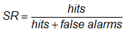Answers the question: What fraction of the forecast "yes" events were correctly observed?
Range: 0 to 1. Perfect score: 1.
Characteristics: Gives information about the likelihood of an observed event, given that it was forecast. It is sensitive to false alarms but ignores misses. SR is equal to 1-FAR. POD is plotted against SR in the categorical performance diagram.
In the example above, SR = 82 / (82+38) = 0.68, indicating that for 68% of the forecast rain events, rain was actually observed.
Threat score (critical success index) -
Answers the question: How well did the forecast "yes" events correspond to the observed "yes" events?
Range: 0 to 1, 0 indicates no skill. Perfect score: 1.
Characteristics: Measures the fraction of observed and/or forecast events that were correctly predicted. It can be thought of as the accuracy when correct negatives have been removed from consideration, that is, TS is only concerned with forecasts that count. Sensitive to hits, penalizes both misses and false alarms. Does not distinguish source of forecast error. Depends on climatological frequency of events (poorer scores for rarer events) since some hits can occur purely due to random chance.
In the example above, TS = 82 / (82+23+38) = 0.57, meaning that slightly more than half of the "rain" events (observed and/or predicted) were correctly forecast.
Equitable threat score (Gilbert skill score) -
 (also denoted GSS)
(also denoted GSS)Answers the question: How well did the forecast "yes" events correspond to the observed "yes" events (accounting for hits due tochance)?
Range: -1/3 to 1, 0 indicates no skill. Perfect score: 1.
Characteristics: Measures the fraction of observed and/or forecast events that were correctly predicted, adjusted for hits associated with random chance (for example, it is easier to correctly forecast rain occurrence in a wet climate than in a dry climate). The ETS is often used in the verification of rainfall in NWP models because its "equitability" allows scores to be compared more fairly across different regimes. Sensitive to hits. Because it penalises both misses and false alarms in the same way, it does not distinguish the source of forecast error.
In the example above, ETS = (82-34) / (82+23+38-34) = 0.44. ETS gives a lower score than TS.
Hanssen and Kuipers discriminant (true skill statistic, Peirce's skill score) -
Answers the question: How well did the forecast separate the "yes" events from the "no" events?
Range: -1 to 1, 0 indicates no skill. Perfect score: 1.
Characteristics: Uses all elements in contingency table. Does not depend on climatological event frequency. The expression is identical to HK = POD - POFD, but the Hanssen and Kuipers score can also be interpreted as (accuracy for events) + (accuracy for non-events) - 1. For rare events HK is unduly weighted toward the first term (same as POD), so this score may be more useful for more frequent events. Can be expressed in a form similar to the ETS except the hitsrandom term is unbiased. See Woodcock (1976) for a comparison of HK with other scores.
In the example above, HK = 82 / (82+23) - 38 / (38+222) = 0.63
Heidke skill score (Cohen's κ) -
where
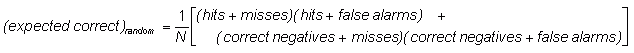Answers the question: What was the accuracy of the forecast relative to that of random chance?
Range: -1 to 1, 0 indicates no skill. Perfect score: 1.
Characteristics: Measures the fraction of correct forecasts after eliminating those forecasts which would be correct due purely to random chance. This is a form of the generalized skill score, where the score in the numerator is the number of correct forecasts, and the reference forecast in this case is random chance. In meteorology, at least, random chance is usually not the best forecast to compare to - it may be better to use climatology (long-term average value) or persistence (forecast = most recent observation, i.e., no change) or some other standard.
In the example above, HSS = 0.61
Odds ratio -
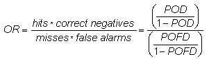Answers the question: What is the ratio of the odds of a "yes" forecast being correct, to the odds of a "yes" forecast being wrong?
Odds ratio - Range: 0 to ∞, 1 indicates no skill. Perfect score: ∞
Log odds ratio - Range: -∞ to ∞, 0 indicates no skill. Perfect score: ∞
Characteristics: Measures the ratio of the odds of making a
hit to the odds of making a false alarm. The logarithm of the odds ratio is
often used instead of the original value. Takes prior probabilities
into account. Gives better scores for rarer events. Less sensitive to
hedging. Do not use if any of the cells in the contingency table are equal to
0. Used widely in medicine but not yet in meteorology --
see Stephenson (2000) for more information.
Note that the odds ratio is not the same as the
ratio of the probability of making a hit (hits / # forecasts) to the
probability of making a false alarm (false alarms / # forecasts),
since both of those can depend on the climatological frequency (i.e.,
the prior probability) of the event.
In the example above, OR = (82 x 222) / (23 x 38) = 20.8, indicating that the odds of a "yes" prediction being correct are over 20 times greater than the odds of a "yes" forecast being incorrect.
Odds ratio skill score (Yule's Q) -
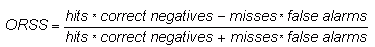Answers the question: What was the improvement of the forecast over random chance?
Range: -1 to 1, 0 indicates no skill. Perfect score: 1
Characteristics: Independent of the marginal totals (i.e., of the threshold chosen to separate "yes" and "no"), so is difficult to hedge. See Stephenson (2000) for more information.
In the example above, ORSS = [(82 x 222)-(23 x 38)] / [(82 x 222)+(23 x 38)] = 0.91
Methods for multi-category forecasts
Methods for verifying multi-category forecasts also start with a contingency table showing the frequency of forecasts and observations in the various bins. It is analogous to a scatter plot for categories.
| Observed Category | Total | |||||
|---|---|---|---|---|---|---|
| i,j | 1 | 2 | ... | K | ||
| 1 | n(F1,O1) | n(F1,O2) | ... | n(F1,OK) | N(F1) | |
| Forecast Category |
2 | n(F2,O1) | n(F2,O2) | ... | n(F2,OK) | N(F2) |
| ... | ... | ... | ... | ... | ... | |
| K | n(FK,O1) | n(FK,O2) | ... | n(FK,OK) | N(FK) | |
| Total | N(O1) | N(O2) | ... | N(OK) | N | |
In this table n(Fi,Oj) denotes the number of forecasts in category i that had observations in category j, N(Fi) denotes the total number of forecasts in category i, N(Oj) denotes the total number of observations in category j, and N is the total number of forecasts.
The distributions approach to forecast verification examines the relationship among the elements in the multi-category contingency table. A perfect forecast system would have values of non-zero elements only along the diagonal, and values of 0 for all entries off the diagonal. The off-diagonal elements give information about the specific nature of the forecast errors. The marginal distributions (N's at right and bottom of table) show whether the forecast produces the correct distribution of categorical values when compared to the observations. Murphy and Winkler (1987), Murphy et al. (1989) and Brooks and Doswell (1996) develop this approach in detail.
The advantage of the distributions approach is that the nature of the forecast errors can more easily be diagnosed. The disadvantage is that it is more difficult to condense the results into a single number. There are fewer statistics that summarize the performance of multi-category forecasts. However, any multi-category forecast verification can be converted to a series of K-1 yes/no-type verifications by defining "yes" to be "in category i" or "in category i or higher", and "no" to be "not in category i" or "below category i".
Histogram - Plot the relative frequencies of forecast and observed categories
Answers the question: How well did the distribution of forecast categories correspond to the distribution of observed categories?
Characteristics: Shows similarity between location, spread, and skewness of forecast and observed distributions. Does not give information on the correspondence between the forecasts and observations. Histograms give information similar to box plots.

Accuracy (fraction correct) -
Answers the question: Overall, what fraction of the forecasts were in the correct category?
Range: 0 to 1. Perfect score: 1.
Characteristics: Simple, intuitive. Can be misleading since it is heavily influenced by the most common category.
Accuracy (fraction correct) -
Answers the question: What was the accuracy of the forecast in predicting the correct category, relative to that of random chance?
Range: -∞ to 1, 0 indicates no skill. Perfect score: 1.
Characteristics: Measures the fraction of correct forecasts after eliminating those forecasts which would be correct due purely to random chance. This is one form of a generalized skill score, where the score in the numerator is the number of correct forecasts, and the reference forecast in this case is random chance. Requires a large sample size to make sure that the elements of the contingency table are all adequately sampled. In meteorology, at least, random chance is usually not the best forecast to compare to - it may be better to use climatology (long-term average value) or persistence (forecast is most recent observation, i.e., no change) or some other standard.
Hanssen and Kuipers discriminant (true skill statistic, Peirce's skill score) -
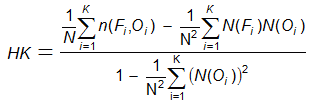Answers the question: What was the accuracy of the forecast in predicting the correct category, relative to that of random chance?
Range: -1 to 1, 0 indicates no skill. Perfect score: 1
Characteristics: Similar to the Heidke skill score (above), except that in the denominator the fraction of correct forecasts due to random chance is for an unbiased forecast.
Gerrity score -
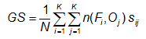 (i = j, diagonal)
(i = j, diagonal)
with the sample probabilities (observed frequencies) given by pi = N(Oi) / N).
Answers the question: What was the accuracy of the forecast in predicting the correct category, relative to that of random chance?
Range: -1 to 1, 0 indicates no skill. Perfect score: 1
Characteristics: Uses all entries in the contingency table, does not depend on the forecast distribution, and is equitable (i.e., random and constant forecasts score a value of 0). GS does not reward conservative forecasting like HSS and HK, but rather rewards forecasts for correctly predicting the less likely categories. Smaller errors are penalized less than larger forecast errors. This is achieved through the use of the scoring matrix. A more detailed discussion and examples for 3-category forecasts can be found in Jolliffe and Stephenson (2012).
Methods for forecasts of continuous variables
Verifying forecasts of continuous variables measures how the values of the forecasts differ from the values of the observations. The continuous verification methods and statistics will be demonstrated on a sample data set of 10 temperature forecasts taken from Stanski et al. (1989):
| Day | 1 | 2 | 3 | 4 | 5 | 6 | 7 | 8 | 9 | 10 |
|---|---|---|---|---|---|---|---|---|---|---|
| Forecast, Fi (C) | 5 | 10 | 9 | 15 | 22 | 13 | 17 | 17 | 19 | 23 |
| Observation, Oi (C) | -1 | 8 | 12 | 13 | 18 | 10 | 16 | 19 | 23 | 24 |
Verification of continous forecasts often includes some exploratory plots such as scatter plots and box plots, as well as various summary scores.
Scatter plot - Plot the forecast values against the observed values
Answers the question: How well did the forecast values correspond to the observed values?
Characteristics: Good first look at correspondence between forecast and observations. An accurate forecast will have points on or near the diagonal.

Scatter plots of the error can reveal relationships between the observed or forecast values and the errors.

Box plot - Plot boxes to show the range of data falling between the 25th and 75th percentiles, horizontal line inside the box showing the median value, and the whiskers showing the complete range of the data.
Answers the question: How well did the distribution of forecast values correspond to the distribution of observed values?
Characteristics: Shows similarity between location, spread, and skewness of forecast and observed distributions. Does not give information on the correspondence between the forecasts and observations. Box plots give information similar to histograms.

Mean error -
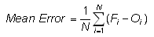Answers the question: What is the average forecast error?
Range: -∞ to ∞. Perfect score: 0.
Characteristics: Simple, familiar. Also called the (additive) bias. Does not measure the magnitude of the errors. Does not measure the correspondence between forecasts and observations, i.e., it is possible to get a perfect score for a bad forecast if there are compensating errors.
In the example above, Mean Error = 0.8C
(Multiplicative) bias -

Answers the question: How does the average forecast magnitude compare to the average observed magnitude?
Range: -∞ to ∞. Perfect score: 1.
Characteristics: Simple, familiar. Best suited for quantities that have 0 as a lower or upper bound. Does not measure the magnitude of the errors. Does not measure the correspondence between forecasts and observations, i.e., it is possible to get a perfect score for a bad forecast if there are compensating errors.
In the example above, Bias = 1.06
Mean absolute error -
Answers the question: What is the average magnitude of the forecast errors?
Range: 0 to ∞. Perfect score: 0.
Characteristics: Simple, familiar. Does not indicate the direction of the deviations.
In the example above, MAE = 2.8 C
Root mean square error -

Answers the question: What is the average magnitude of the forecast errors?
Range: 0 to ∞. Perfect score: 0.
Characteristics: Simple, familiar. Measures "average" error, weighted according to the square of the error. Does not indicate the direction of the deviations. The RMSE puts greater influence on large errors than smaller errors, which may be a good things if large errors are especially undesirable, but may also encourage conservative forecasting.
In the example above, RMSE = 3.2 C
The root mean square factor is similar to RMSE, but gives a multiplicative error instead of an additive error.
Mean squared error -

Measures the mean squared difference between the forecasts and observations.
Range: 0 to ∞. Perfect score: 0.
Characteristics: Can be decomposed into component error sources following Murphy (1987). Units of MSE are the square of the basic units.
In the example above, MSE = 10 degrees squared
Linear error in probability space (LEPS) -
Measures the error in probability space as opposed to measurement space, where CDFo() is the cumulative probability density function of the observations, determined from an appropriate climatology.
Range: 0 to 1. Perfect score: 0.
Characteristics: Does not discourage forecasting extreme
values if they are warranted. Requires knowledge of climatological PDF. Not
yet in wide usage -- Potts et al. (1996)
derived an improved version of the LEPS score that is equitable and
does not "bend back" (give better scores for worse forecasts near the extremes):
 .
.
In the example above, suppose the climatological temperature is normally distributed with a mean of 14 C and variance of 50 C. Then according to the first expression, LEPS=0.106.

Stable equitable error in probability space (SEEPS) -

where n(Fi,Oj) is the joint occurrence of forecast category i and observed category j in the 3x3 contingency table, and the scoring matrix is given by
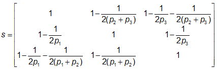Like LEPS, SEEPS measures the error in probability space as opposed to measurement space. It was developed to assess rainfall forecasts, where (1-p1) is the climatological probability of rain (i.e., accumulation exceeding 0.2 mm, following WMO guidelines), and p2=2p3 divides the climatological cumulative rainfall ht" (lower 2/3 of rain rates ≥0.2 mm) and "heavy" (upper 1/3 of rain rates ≥0.2 mm). Refer to diagram at right, where tL/H is the threshold delineating "light" and "heavy" rain.
Range: 0 to 1. Perfect score: 0.
Characteristics: Encourages forecasting of all categories. Resistent to hedging. Requires knowledge of climatological PDF. 1-SEEPS may be preferred as it is positively oriented. Use of locally derived thresholds allows aggregation/comparison of scores across climatologically varying regimes. For further stability require 0.1 < p1 < 0.85, that is, climate not too dry or too wet so that rain (or no rain) is an extreme event. For more information see Rodwell et al. (2010).
Correlation coefficient -

Answers the question: How well did the forecast values correspond to the observed values?
Range: -1 to 1. Perfect score: 1.
Characteristics: Good measure of linear association or phase error. Visually, the correlation measures how close the points of a scatter plot are to a straight line. Does not take forecast bias into account -- it is possible for a forecast with large errors to still have a good correlation coefficient with the observations. Sensitive to outliers.
In the example above, r = 0.914
Anomaly correlation -

Answers the question: How well did the forecast anomalies correspond to the observed anomalies?
Range: -1 to 1. Perfect score: 1.
Characteristics: Measures correspondence or phase difference between forecast and observations, subtracting out the climatological mean at each point, C, rather than the sample mean values. The anomaly correlation is frequently used to verify output from numerical weather prediction (NWP) models. AC is not sensitive to forecast bias, so a good anomaly correlation does not guarantee accurate forecasts. Both forms of the equation are in common use -- see Jolliffe and Stephenson (2012) or Wilks (2011) for further discussion.
In the example above, if the climatological temperature is 14 C, then AC = 0.904. AC is more often used in spatial verification.
S1 score -

where ΔF (ΔO) refers to the horizontal gradient in the forecast (observations).
Answers the question: How well did the forecast gradients correspond to the observed gradients?
Range: 0 to ∞. Perfect score: 0.
Characteristics: It is usually applied to geopotential height or sea level pressure fields in meteorology. Long historical records in NWP showing improvement in model performance over the years. Because S1 depends only on gradients, good scores can be achieved even when the forecast values are biased. Also depends on spatial resolution of the forecast.

Answers the question: What is the relative improvement of the forecast over some reference forecast?
Range: Lower bound depends on what score is being used to compute skill and what reference forecast is used, but upper bound is always 1; 0 indicates no improvement over the reference forecast. Perfect score: 1.
Characteristics: Implies information about the value or worth of a forecast relative to an alternative (reference) forecast. In meteorology the reference forecast is usually persistence (no change from most recent observation) or climatology. The skill score can be unstable for small sample sizes. When MSE is the score used in the above expression then the resulting statistic is called the reduction of variance.
- - - - - - - - - - -
See also Methods for
spatial forecasts for more scientific/diagnostic techniques.
See also Other methods for additional scores for forecasts of continuous variables.
Methods for probabilistic forecasts
A probabilistic forecast gives a probability of an event occurring, with a value between 0 and 1 (or 0 and 100%). In general, it is difficult to verify a single probabilistic forecast. Instead, a set of probabilistic forecasts, pi, is verified using observations that those events either occurred (oi=1) or did not occur (oi=0).
An accurate probability forecast system has:
reliability - agreement between
forecast probability and mean observed frequency
sharpness - tendency to forecast
probabilities near 0 or 1, as opposed to values clustered around the mean
resolution - ability of the forecast
to resolve the set of sample events into subsets with characteristically
different outcomes

Reliability diagram - (called "attributes diagram" when the no-resoloution and no-skill w.r.t. climatology lines are included).
The reliability diagram plots the observed frequency against the forecast probability, where the range of forecast probabilities is divided into K bins (for example, 0-5%, 5-15%, 15-25%, etc.). The sample size in each bin is often included as a histogram or values beside the data points.
Answers the question: How well do the predicted probabilities of an event correspond to their observed frequencies?
Characteristics: Reliability is indicated by the proximity of
the plotted curve to the diagonal. The deviation from the diagonal gives
the conditional bias. If the curve lies below the line, this
indicates overforecasting (probabilities too high); points above the line
indicate underforecasting (probabilities too low). The flatter the curve in the
reliability diagram, the less resolution it has. A forecast of
climatology does not discriminate at all between events and non-events, and thus
has no resolution. Points between the "no skill" line and the diagonal
contribute positively to the Brier skill score. The frequency
of forecasts in each probability bin (shown in the histogram) shows the
sharpness of the forecast.
The reliability diagram is conditioned on the forecasts (i.e., given
that an event was predicted, what was the outcome?), and can be expected to give
information on the real meaning of the forecast. It is a good partner
to the ROC, which is conditioned on the observations. Some
users may find a reliability table (table of observed relative frequency associated with
each forecast probability) easier to understand than a reliability diagram.
Brier score -
Answers the question: What is the magnitude of the probability forecast errors?
Measures the mean squared probability error. Murphy (1973) showed that it could be partitioned into three terms: (1) reliability, (2) resolution, and (3) uncertainty.
Range: 0 to 1. Perfect score: 0.
Characteristics: Sensitive to climatological frequency of the event: the more rare an event, the easier it is to get a good BS without having any real skill. Negative orientation (smaller score better) - can "fix" by subtracting BS from 1.
Brier skill score -

Answers the question: What is the relative skill of the probabilistic forecast over that of climatology, in terms of predicting whether or not an event occurred?
Range: -∞ to 1, 0 indicates no skill when compared to the reference forecast. Perfect score: 1.
Characteristics: Measures the improvement of the probabilistic forecast relative to a reference forecast (usually the long-term or sample climatology), thus taking climatological frequency into account. Not strictly proper. Unstable when applied to small data sets; the rarer the event, the larger the number of samples needed.

Relative operating characteristic - Plot hit rate (POD) vs false alarm rate (F), using a set of increasing probability thresholds (for example, 0.05, 0.15, 0.25, etc.) to make the yes/no decision. The area under the ROC curve is frequently used as a score.
Answers the question: What is the ability of the forecast to discriminate between events and non-events?
ROC: Perfect: Curve travels from bottom left to top
left of diagram, then across to top right of diagram. Diagonal line
indicates no skill.
ROC area: Range: 0 to 1, 0.5 indicates no skill.
Perfect score: 1
Characteristics: ROC measures the ability of the forecast to
discriminate between two alternative outcomes, thus measuring resolution.
It is not sensitive to bias in the forecast, so says nothing about reliability.
A biased forecast may still have good resolution and produce a good ROC
curve, which means that it may be possible to improve the forecast through
calibration. The ROC can thus be considered as a measure of potential usefulness.
The ROC is conditioned on the observations (i.e., given that an event occurred,
what was the correponding forecast?) It is therefore a good companion
to the reliability diagram, which is
conditioned on the forecasts.
More information on ROC can be found in Mason
1982, Jolliffe and Stephenson 2012 (ch.3),
and the WISE site.

Discrimination diagram - Plot the likelihood of each forecast probability when the event occurred and when it did not occur. A summary score can be computed as the absolute value of the difference between the mean values of each distribution.
Answers the question: What is the ability of the forecast to discriminate between events and non-events?
Perfect discrimination is when there is no overlap between the distributions of forecast probabilities for observed events and non-events. As with the ROC the discrimination diagram is conditioned on the observations (i.e., given that an event occurred what was the correponding forecast?) Some users may find the discrimination diagram easier to understand than the ROC.
Ranked probability score -

where M is the number of forecast categories, pk is the predicted probability in forecast category k, and ok is an indicator (0=no, 1=yes) for the observation in category k.
Answers the question: How well did the probability forecast predict the category that the observation fell into?
Range: 0 to 1. Perfect score: 0.
Characteristics: Measures the sum of squared differences in cumulative probability space for a multi-category probabilistic forecast. Penalizes forecasts more severely when their probabilities are further from the actual outcome. Negative orientation - can "fix" by subtracting RPS from 1. For two forecast categories the RPS is the same as the Brier Score.
Continuous ranked probability score -
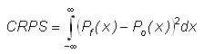Answers the question: How well did the probability forecast predict the value of the observation?
Perfect score: 0.
Characteristics: The CRPS is essentially the Mean Absolute Error of the forecast distribution with respect to the observed distribution. It has units of the variable being verified. Penalizes forecasts more severely when their probabilities are further from the actual outcome. Lower values are better. Because CRPS considers the entire forecast probability distribution, it is a good all-around score for evaluating probabilistic forecasts.
Ranked probability skill score -

Answers the question: What is the relative improvement of the probability forecast over climatology in predicting the category that the observations fell into?
Range: -∞ to 1, 0 indicates no skill when compared to the reference forecast. Perfect score: 1.
Characteristics: Measures the improvement of the multi-category probabilistic forecast relative to a reference forecast (usually the long-term or sample climatology). Strictly proper. Takes climatological frequency into account. Unstable when applied to small data sets.

Relative value (value score) (
Richardson, 2000; Wilks, 2001)

Answers the question: For a cost/loss ratio C/L for taking action based on a forecast, what is the relative improvement in economic value between climatalogical and perfect information?
Range: -∞ to 1. Perfect score: 1.
Characteristics: The relative value is a skill score of expected expense, with climatology as the reference forecast. Because the cost/loss ratio is different for different users of forecasts, the value is generally plotted as a function of C/L.
 Like ROC,
it gives information that can be used in decision making. When applied
to a probabilistic forecasts system (for example, an ensemble
prediction system), the optimal value for a given C/L may be achieved by a
different forecast probability threshold than the optimal value for a
different C/L.
In this case it is necessary to compute relative value curves for the entire
range of probabilities, then select the optimal values (the upper envelope
of the relative value curves) to represent the value of the probabilistic
forecast system. Click here
for more information on the cost/loss model and relative value.
Like ROC,
it gives information that can be used in decision making. When applied
to a probabilistic forecasts system (for example, an ensemble
prediction system), the optimal value for a given C/L may be achieved by a
different forecast probability threshold than the optimal value for a
different C/L.
In this case it is necessary to compute relative value curves for the entire
range of probabilities, then select the optimal values (the upper envelope
of the relative value curves) to represent the value of the probabilistic
forecast system. Click here
for more information on the cost/loss model and relative value.
- - - - - - - - - - -
See also Methods for ensemble prediction systems for more scientific/diagnostic techniques.
Diagnostic verification methods
Scientific, or diagnostic, verification methods delve more deeply into the nature of forecast errors. As a result they are frequently more complex than the standard verification measures described earlier. Distributions-oriented approaches and plots such as histograms, box plots, and scatter plots, are standard diagnostic verification methods.
This section gives very brief descriptions of several recently developed scientific and diagnostic methods, and relies heavily on references and links to other sites with greater detail.
This is also a place to promote new verification techniques. If you are working in this area, then you are encouraged to share your methods via this web site.
Methods for spatial forecasts
Scale decomposition methods
Scale decomposition methods allow the errors at each scale to be diagnosed.- - - - - - - - - - -
Wavelet decomposition
(Briggs and Levine, 1997)

Intensity-scale verification approach (Casati et al. 2004)
Answers the question: How does the skill of spatial precipitation forecasts
depend on both the scale of the forecast error and the intensity of the precipitation events?
The intensity-scale verification approach bridges
traditional categorical binary verification, which provides information
about skill for different precipitation intensities, with the more
recent techniques which evaluate the forecast skill on different
spatial scales (e.g., Zepeda-Arce et al., 2000; Briggs and Levine, 1997).
It assesses the forecast on its whole domain, and is well suited for verifying
spatially discontinuous fields, such as precipitation fields characterized by the
presence of many scattered precipitation events. It provides useful insight on
individual forecast cases as well as for forecast systems evaluated over many cases.
Forecasts are assessed using the Mean Squared Error
(MSE) skill score of binary images, obtained from the forecasts and
analyses by thresholding at different precipitation rate intensities.
The skill score is decomposed on different spatial scales using a
two-dimensional discrete Haar wavelet decomposition of binary error
images. The forecast skill can then be evaluated in terms of precipitation
rate intensity and spatial scale.
Click here to learn more.
- - - - - - - - - - -
Discrete cosine transformation (DCT) (Denis et al., 2002a for method; Denis et al., 2002b and de Elia et al., 2002 for application)
- - - - - - - - - - -
Neighborhood methods
Neighborhood methods relax the requirement for an exact match by evaluating forecasts in the local neighborhood of the observations.- - - - - - - - - - -
Multi-scale statistical organization (Zepeda-Arce et al., 2000)
- - - - - - - - - - -
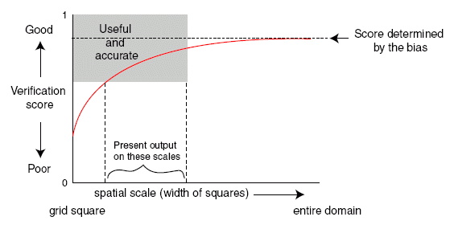Fractions skill score (Roberts and Lean, 2008)
Answers the question: What are the spatial scales at which the forecast resembles the observations?
This approach directly compares the forecast and observed fractional coverage of grid-box events (rain exceeding a certain threshold, for example) in spatial windows of increasing size. These event frequencies are used directly to compute a Fractions Brier Score, a version of the more familiar (half) Brier score but now the observation can take any value between 0 and 1. The result can be framed as a Fractions Skill Score
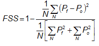where Pf is the forecast fraction, Po is the observed fraction, and N is the number of spatial windows in the domain.
FSS has the following properties:
- The Fractions Skill Score ranges from 0 (complete mismatch) to 1 (perfect match).
- If either there are no events forecast and some occur, or some occur and none are forecast the score is always 0.
- The value of FSS above which the forecasts are considered to have useful (better than random) skill is given by FSSuseful = 0.5 + fo/2, where fo is the domain average observed fraction. The smallest window size for which FSS ≥ FSSuseful can be considered the "skillful scale".
- As the size of the squares used to compute the fractions gets larger, the score will asympotote to a value that depends on the ratio between the forecast and observed frequencies of the event. The closer the asymptotic value is to 1, the smaller the forecast bias.
- The score is most sensitive to rare events (e.g., small rain areas).
- - - - - - - - - - -
Pragmatic (neighborhood) method (Theis et al., 2005)
- - - - - - - - - - -
Spatial multi-event contingency tables -
useful for verifying high resolution forecasts (Atger, 2001).
By using multiple thresholds, a deterministic forecast system can be
evaluated across a range of possible decision thresholds
(instead of just one) using ROC
and relative value.
The decision thresholds might be intensity thresholds or even "closeness"
thresholds (for example, forecast event within 10 km of the location of
interest, within 20 km, 30 km, etc.). Such verification results can
be used to assess the performance of high resolution forecasts
where the exact spatial matching of forecast and observed events is
difficult or unimportant. This multi-threshold approach enables a fairer
comparison against ensemble prediction systems or other probabilistic forecasts.
Click here to learn more.
(related work: Tremblay et al., 1996)
- - - - - - - - - - -
Practically Perfect Hindcasts - Objective limits on forecasting skill of rare events Hitchens et al., 2013;
- - - - - - - - - - -
Neighborhood verification framework -
12 neighborhood (a.k.a. fuzzy verification) methods combined into one
framework (Ebert, 2008)
Neighborhood verification approaches reward closeness by relaxing the requirement for exact matches between forecasts and observations. Some of these neighborhood methods compute standard verification metrics for deterministic forecasts using a broader definition of what constitutes a "hit". Other neighborhood methods treat the forecasts and/or observations as probability distributions and use verification metrics suitable for probability forecasts. Implicit in each neighborhood verification method is a particular decision model concerning what constitutes a good forecast.
The key to the neighborhood approach is the use of a spatial window or neighborhood surrounding the forecast and/or observed points. The treatment of the points within the window may include averaging (upscaling), thresholding, or generation of a PDF, depending on the neighborhood method used. The size of this neighborhood can be varied to provide verification results at multiple scales, thus allowing the user to determine at which scales the forecast has useful skill. Other windows could be included to represent closeness in time, closeness in intensity, and/or closeness in some other important aspect.
- - - - - - - - - - -
Object oriented methods
CRA (entity-based) verification (Ebert and McBride, 2000)
Answers the question:
What is the location error of the (spatial) forecast, and how does the total error break
down into components due to incorrect location, volume, and fine scale structure?

This object-oriented method verifies the properties of spatial forecasts of entities,
where an entity is anything that can be defined by a closed contour. Some
examples of entities, or blobs, are contiguous rain areas (CRAs, for which
the method is named), convective outlook regions, and low pressure minima.
For each entity that can be identified in the forecast and the observations,
CRA verification uses pattern matching techniques to determine the location
error, as well as errors in area, mean and maximum intensity, and spatial
pattern. The total error can be decomposed into components due to location,
volume, and pattern error. This is a useful property for model developers
who need such information to improve the numerical weather prediction models.
In addition, the verified entities themselves may be classified as "hits", "misses", etc., according to how close the forecast location was to the observed location, and how well the maximum intensity was represented by the forecast. This event verification can be useful for monitoring forecast performance.
Click here to learn more.
- - - - - - - - - - -
Method for Object-based Diagnostic Evaluation (MODE) (Brown et al.,2004; Davis et al., 2006) 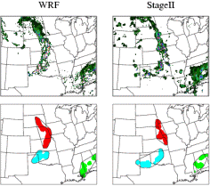
Answers the question: How similar are the forecast objects to the observed objects according to a variety of descriptive criteria ?
MODE uses a convolution filter and thresholding to first identify objects in gridded fields. Performance at different spatial scales can be investigated by varying the values of the filter and threshold parameters. Then a fuzzy logic scheme is used to merge objects within a field, and match them between the forecast and the observations. Several attributes of the matched objects (location, area, volume, intensity, shape, etc.) are compared to see how similar they are. These are combined to give an "interest value" that summarizes the goodness of the match.
Output of the MODE algorithm include:
- Attributes of single matched shapes (i.e., hits)
- Attributes of single unmatched shapes (i.e., false alarms, misses)
- Attributes of clustered objects (i.e., groups of forecast or observed objects that are merged together)
- Attributes of interest to specific users (e.g., gaps between storms, for aviation strategic planning)
Attributes can be summarized across many cases to understand how forecasts represent the storm/precipitation climatology, understand systematic errors, and document variability in performance in different situations.
The MODE verification scheme is part of the Model Evaluation Tools (MET) toolkit freely available from NCAR. More information on MODE is available from the Developmental Testbed Center.
- - - - - - - - - - -
Event verification using composites (Nachamkin, 2004)
- - - - - - - - - - -
Cluster analysis
(Marzban and Sandgathe, 2006, 2008)
- - - - - - - - - - -
Procrustes shape analysis
(Michaes et al., 2007;
Lack et al. 2010)
- - - - - - - - - - -
Structure-Amplitude-Location (SAL) method
(Wernli et al., 2008)
- - - - - - - - - - -
Automated east-west phase error calculation (Keith Brill, NOAA/NWS/NCEP/HPC)
Answers the question: What is the phase error of the (spatial) forecast?
This approach considers both high and low pressure centers, troughs, and ridges, and takes into account the typical synoptic scale wavelength.
Gridded forecasts and analyses of mean sea level pressure are meridionally averaged within a zonal strip to give an east-west series of forecast and analyzed values. Cosine series trigonometric approximations are applied to both series, and the variance associated with each spectral component is computed. These are then sorted in descending order of variance to get the hierarchy of most important waves. If the hierarchies agree between the forecast and analyzed spectral components, then the phase angle (error) can be computed for each component.
In practice, the first spectral component is usually responsible for most of the variance and is the main one of interest. The phase errors are presented as time series. Click here to learn more.
- - - - - - - - - - -
Feature calibration and alignment (Hoffman et al., 1995; Nehrkorn et al., 2003)
- - - - - - - - - - -
Field verification methods
 Displacement and Amplitude Score (DAS)
(Keil and Craig, 2009)
Displacement and Amplitude Score (DAS)
(Keil and Craig, 2009)Answers the question: What is the distance between forecast and observed features?
Measuring the distance between observed and forecast features is not only an intuitive error measure for many users, but also avoids the double-counting penalty where a feature displaced in space is scored worse than either a complete miss or a false alarm since it is penalized as both at once. The Displacement and Amplitude Score (DAS) is based on an optical flow algorithm that defines a vector field that deforms, or morphs, one image to match another. In DAS distance and amplitude errors are combined to produce a single measure. The optical flow method does not require identification and matching of discrete objects, which is often subjective and sensitive to many parameters in the algorithms.
The figure to the right shows the observed radar reflectivity (top left), forecast reflectivity (top right), forecast superimposed with displacement vector field matching the forecast onto the observation (bottom left), and morphed forecast (bottom right). The two components of DAS in forecast space comprise the mean displacement vector length and the root mean square error of morphed forecast and observation (bottom right – top left).
Methods for probabilistic & ensemble forecasts
Wilson method for EPS verification (Wilson et al., 1999)- - - - - - - - - - -
Multi-category reliability diagram (Hamill, 1997)
- - - - - - - - - - -
Rank histogram (Talagrand et al, 1997; Hamill, 2001) -

Answers the question: How well does the ensemble spread of the forecast represent the true variability (uncertainty) of the observations?
Also known as a "Talagrand diagram", this method checks where the verifying observation usually falls with respect to the ensemble forecast data, which is arranged in increasing order at each grid point. In an ensemble with perfect spread, each member represents an equally likely scenario, so the observation is equally likely to fall between any two members.
To construct a rank histogram, do the following:
- At every observation (or analysis) point rank the N ensemble members from lowest to highest. This represents N+1 possible bins that the observation could fit into, including the two extremes
- Identify which bin the observation falls into at each point
- Tally over many observations to create a histogram of rank.
Interpretation:
Flat - ensemble spread about right to represent forecast uncertainty
U-shaped - ensemble spread too small, many observations falling outside
the extremes of the ensemble
Dome-shaped - ensemble spread too large, most observations falling
near the center of the ensemble
Asymmetric - ensemble contains bias
Note: A flat rank histogram does not necessarily indicate a good forecast, it only measures whether the observed probability distribution is well represented by the ensemble.
- - - - - - - - - - -
Correspondence ratio - Measures the ratio of the area of intersection of two or more events to the combined area of those events (Stensrud and Wandishin, 2000)


where Fm,i is the value of forecast m at gridpoint i, and Oi is the corresponding observed value. In the diagram CR is the ratio of the dark area to the total shaded area. Click here to learn more.
- - - - - - - - - - -
Likelihood skill measure - Likelihood is defined very simply as the probability of the observations given the forecast. Likelihood-based measures can be used for binary and continuous probability forecasts, and provide a simple and natural general framework for the evaluation of all kinds of probabilistic forecasts. For more information see Jewson (2003)
- - - - - - - - - - -
Logarithmic scoring rule (ignorance score)
(Roulston and Smith, 2002)
The logarithmic scoring rule can be defined as follows: If there are n (mutually exclusive) possible outcomes and fi (i=1,...n) is the predicted probability of the ith outcome occurring then if the jth outcome is the one which actually occurs the score for this particular forecast-realization pair is given by
IGN = -log2 fj
As defined above, with a negative sign, the logarithmic score cannot be negative and smaller values of the score are better. The minimum value of the score (zero) is obtained if a probability of 100% is assigned to the actual outcome. If a probability of zero is assigned to the actual outcome the logarithmic scoring rule is infinite. Click here to learn more.
Methods for rare events
Extreme dependence score family (Ferro and Stephenson, 2011)Extreme dependency score -

Symmetric extreme dependency score -

Extremal dependence index -
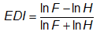Symmetric extremal dependence index -
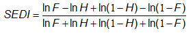where p=(hits+misses)/total is the base rate (climatology), q=(hits+false alarms)/total is the frequency with which the event is forecast, H is the hit rate, also known as the probability of detection, and F is the false alarm rate, also known as the probability of false detection.
Answer the question: What is the association between forecast and observed rare events?
Range: -1 to 1, 0 indicates no skill. Perfect score: 1
Characteristics: Scores converge to 2η-1 as event frequency approaches 0, where η is a parameter describing how fast the hit rate converges to zero for rarer events. EDS is independent of bias, so should be presented together with the frequency bias. Both EDI and SEDI are independent of the base rate. SEDI approaches 1 only as the forecast approaches perfection, whereas it is possible to optimize EDS and EDI for biased forecasts. For further details and comparison of the merits of these scores see Ferro and Stephenson (2011).
- - - - - - - - - - -
Probability model approach (Ferro, 2007) - Probability models that impose parametric forms on the relationships between observations and forecasts can help to quantify forecast quality for rare, binary events by identifying key features of the relationships and reducing sampling variation of verification measures. Click here to learn more.
Other methods and scores
Diagrams to plot several statistics at one time
Taylor diagram of correlation coefficient, root-mean-square difference, and standard deviation ( Taylor, 2001); see also LLNL description. An example of a Taylor diagram is shown at right.
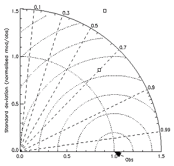- - - - - - - - - - -
BLT diagram of relative climate mean squared difference, variance ratio, and effective correlation (Boer and Lambert, 2001).
- - - - - - - - - - -

Categorical performance diagram (Roebber 2009)
In an approach that is conceptually similar to the Taylor diagram, it is possible
to exploit the geometric relationship between
four measures of dichotomous forecast performance: probability of
detection (POD), false alarm ratio or its opposite, the success ratio
(SR), bias and critical success index (CSI; also known as the threat
score). For good forecasts, POD, SR, bias and CSI approach unity, such
that a perfect forecast lies in the upper right of the diagram. Skill is
assessed by plotting the forecast quality measure relative to a reference forecast (climatology,
persistence or any other desired baseline).
Click here to learn more.
- - - - - - - - - - -
Elliptical representation of vector errors (Koh and Ng, 2009)Answers the question: How does the vector error between the model and observation vary about the mean vector error (i.e., bias)?
In the diagram to the right, the mean vector error is represented by
 .
.
The error variance ellipse may be represented by:

standard deviation,

eccentricity,

- orientation of the major axis, θ.
Range: σ ∈ [0,∞), ε ∈ [0,1], θ ∈ [0,π) Perfect Score: for a vector error σ = 0, ε = 0
Characteristics: For the error ellipse (i.e., forecast minus observation), σ indicates the overall magnitude of the random error, θ is the preferred direction of the vector random error, and ε denotes the degree of preference for that direction.
Click here to learn more.
- - - - - - - - - - -
Root mean squared factor (Golding, 1998) -

Answers the question: What is the average multiplicative error?
The RMSF is the exponent of the root mean square error of the logarithm of the data. The logarithmic transformation is performed to smooth the data, reduce the discontinuities, and make the data more robust. Whereas the RMS error can be interpreted as giving a scale to the additive error, i.e., f = o ± RMS, the RMSF can be interpreted as giving a scale to the multiplicative error, i.e., f = o ×/÷ RMSF (read: "multiplied or divided by"), which is a more appropriate measure of accuracy for some variables and more intuitively meaningful than the RMS log error. In order to avoid assigning skill to trivial forecasts, statistics are only accumulated where either the forecast or observations are within specified limits. For example, for visibility verification, the lower and upper limits used by Golding (1998) were 1 m and 5000 m. When either the forecast or the observation lies within the range but the other is outside the range, then limits of half the lower limit or double the upper limit are prescribed on the other.
- - - - - - - - - - -
Nash-Sutcliffe efficiency coefficient (Nash and Sutcliffe, 1970) -

Answers the question: How well does the forecast predict the observed time series?
Range: -∞ to 1. Perfect score: 1.
Characteristics: Frequently used to quantify the accuracy of
hydrological predictions. If E=0 then the model forecast is no more
accurate than the mean of the observations; if E<0 then the mean
observed value is a more accurate predictor than the model. The
expression is identical to that for the coefficient of determination
R2 and the reduction of variance.
- - - - - - - - - - -

Deterministic limit (Hewson, 2007)
The 'deterministic limit' is defined, for categorical forecasts of a pre-defined rare meteorological event, to simply be the point ahead of issue time at which, across the population, the number of misses plus false alarms equals the number of hits (i.e. critical success index =0.5). A hypothetical example of an accuracy statement that might thus arise would be: 'The deterministic limit for predicting a windstorm, with gusts in excess of 60 kts at one or more low-lying inland stations in NW Europe, is 2.1 days'. The base rate (or event frequency) should also be disclosed. Recalibration of the forecast is often necessary for useful deterministic limit measures to be realised.
As they provide a clear measure of capability, deterministic limit values for various parameters may in due course be used as year-on-year performance indicators, and also to provide succinct guidelines for warning service provision. They could also be used as the cut-off point to switch from deterministic to probabilistic guidance. In turn this may help elevate the hitherto muted enthusiasm shown, by some customers, for probabilistic forecasts.
Click here to learn more.
- - - - - - - - - - -
Alpha Index (Koh and Ng, 2009) -
Answers the question: How does the random error of a forecast compare between regions of different observational variability?
Range: 0 to 2. Perfect score: 0.
Characteristics: Alpha is a normalized measure of unbiased error variance, where the normalization factor is the reciprocal of the sum of forecast and observation variances. Replace the squares by inner products if the variable is a vector (e.g. wind).
Click here to learn more.
- - - - - - - - - - -
 Quantile-based categorical statistics
(Jenkner et al., 2008)
Quantile-based categorical statistics
(Jenkner et al., 2008)
Dichotomous forecasts can be thought of in terms of statistical frequencies instead of physical amplitudes. If the marginal totals of the contingency table are fixed by means of quantiles, categorical statistics benefit from some inherent advantages. The verification problem automatically is calibrated and the degrees of freedom reduce to one, allowing the potential accuracy of the calibrated forecast to be described using a single score. The total error can be split up into the bias and the potential accuracy, which can be measured by the quantile difference and the debiased Peirce's Skill Score, respectively. These two quantities provide a complete verification set with the ability to assess the full range of intensities. The verification can be computed for certain quantiles, as shown at right for the COSMO model's QPF performance over six predefined regions in Switzerland, or it can be aggregated over intensities by means of appropriate summary measures.
Click here to learn more.
Sample forecast datasets
Finley tornado forecasts
This is a classic example used in many textbooks and talks on forecast verification to illustrate the characteristics of the various categorical verification scores.In March 1884 Sergeant John Finley initiated twice daily tornado forecasts for eighteen regions in the United States, east of the Rocky Mountains. Finley claimed 95.6% to 98.6% overall accuracy for the first 3-month period, depending on the time and district, with some districts achieving 100% accuracy for all 3 months. A critic of the results pointed out that 98.2% accuracy could be had by merely forecasting "no tornado"! This clearly illustrates the need for more meaningful verification scores.
The contingency table for Finley's (1884) forecasts is:
| Observed | ||||
|---|---|---|---|---|
| tornado | no tornado | Total | ||
| Forecast | tornado | 28 | 72 | 100 |
| no tornado | 23 | 2680 | 2703 | |
| Total | 51 | 2752 | 2803 | |
Click here to see how the different categorical scores rate the Finley (1884) forecasts.
Probability of precipitation forecasts
 24-hour and 48-hour forecasts of probability of precipitation were made by the Finnish
Meteorological Institute (FMI) during 2003, for daily precipitation in
the city of Tampere in south central Finland. Three precipitation categories were used:
24-hour and 48-hour forecasts of probability of precipitation were made by the Finnish
Meteorological Institute (FMI) during 2003, for daily precipitation in
the city of Tampere in south central Finland. Three precipitation categories were used:Category 0: RR ≤ 0.2 mm
Category 1: 0.3 mm ≤ RR ≤ 4.4 mm
Category 2: RR ≥ 4.5 mm
The probability of rain in each category was predicted each day, with the probabilities across the three categories adding up to 1.
Click here to view the data and see the standard probabilitistic verification results for these precipitation forecasts. Scores and diagnostic plots that are demonstrated include Brier score and its decomposition, Brier skill score, reliability diagram, relative operating characteristic (ROC), relative value, ranked probability score, and ranked probability skill score.
Freely available verification tools and packages
Scores
scores is an open source Python package developed by the Bureau of Meteorology. It contains mathematical functions for the verification, evaluation and optimisation of forecasts, predictions or models. At present, scores primarily supports the meteorological, climatological and oceanographic communities and is also being used for machine learning.
scores includes over 60 verification metrics and statistical techniques. Additionally, it provides pre-processing tools for preparing data for scores in a variety of formats including cumulative distribution functions (CDF).
scores primarily supports xarray datatypes for Earth system data allowing it to work with NetCDF4, HDF5, Zarr and GRIB data formats among others. It uses Dask for scaling and performance. Some metrics also work with pandas. All of the metrics have undergone a thorough scientific and software review. Every score has a companion Jupyter Notebook tutorial that demonstrates its use in practice.
Model Evaluation Tools (MET)
The Model Evaluation Tools (MET)
verification package was developed by the National Center for Atmospheric Research
(NCAR) Developmental Testbed Center (DTC).
It is a highly-configurable, state-of-the-art suite of verification tools.
It was developed using output from the Weather Research and Forecasting (WRF)
modeling system but may be applied to the output of other modeling systems as well.
It computes the following:
- Standard verification scores comparing gridded model data to point-based observations
- Standard verification scores comparing gridded model data to gridded observations
- Spatial verification methods comparing gridded model data to gridded observations using neighborhood, object-based, and intensity-scale decomposition approaches
- Ensemble and probabilistic verification methods comparing gridded model data to point-based or gridded observations
- Aggregating the output of these verification methods through time and space
Ensemble Verification System (EVS)
The Ensemble Verification System is designed to verify ensemble forecasts of hydrologic and hydrometeorological variables, such as temperature, precipitation, streamflow, and river stage, issued at discrete forecast locations (points or areas). It is an experimental prototype developed by the Hydrological Ensemble Prediction group of the NOAA Office of Hydrologic Development.This Java application in intended to be flexible, modular, and open to accommodate enhancements and additions by its developers and users. Participation in the continuing development of the EVS toward a versatile and standardized tool for ensemble verification is welcomed. For more information see the papers by Brown et al. (2010) and Demargne et al. (2010).
R
The R Project for Statistical Computing has free software for statistical computing and graphics, including some packages for forecast verification. In particular, the "verification" package provides basic verification functions including ROC plots, attributes (reliability) diagrams, contingency table scores, and more, depending on the type of forecast and observation. It verifies- binary forecasts versus binary observations,
- probabilistic forecasts versus binary observations,
- continous forecasts versus continuous observations,
- ensemble forecasts versus continuous observations,
- spatial forecasts versus spatial observations using fractions skill score and the intensity-scale method.
Climate Explorer
The Climate Explorer is a web based tool for performing climate analysis that also includes several options for seasonal forecast verification. The user is allowed to select a particular season and variable of interest (e.g., precipitation, 2 metre temperature, sea surface temperature, sea level pressure, etc.) and a seasonal forecast model (e.g., ECMWF, UK Met Office, NCEP/CPF, ECHAM4.5, in addition to a large number of models participating in the EU projects DEMETER and ENSEMBLES, and the corresponding observations prior to performing verification. Climate Explorer offers a large number of deterministic and probabilistic scores for assessing the performance of seasonal ensemble predictions (e.g., correlation; root meansquare error and mean absolute error of the ensemble mean; Brier score and its decomposition into reliability, resolution and uncertainty; reliability diagram; Brier skill score; tercile and quintile ranked probability score; tercile and quintile ranked probability skill score; and relative operating characteristics (ROC) curve). Forecast verification results and scores are displayed as spatial maps, diagrams and single values when the user selects the option for time series verification.Some frequently asked questions
1. What is the best statistic for measuring the accuracy of a forecast?
2. Why, when a model's resolution is improved, do the forecasts often verify worse?
4.How do I verify worded forecasts?
5.What does "hedging" a forecast mean, and how do some scores encourage hedging?
6. Is there a difference between "verification" and "validation"?
7.What is the relationship between confidence intervals and prediction intervals?
8.How do I know whether one forecast system performs significantly better than another?
9. What are the challenges and strategies to verify weather and climate extremes?
References
Verification websites
General
Harold Brooks' site - a great reference list and a sample temperature data set to play withA New View of Statistics - Will Hopkins' statistical primer for the health sciences
Engineering Statistics Handbook - NIST / SEMATECH summaries of statistical methods
Web Interface for Statistics Education (WISE) - teaching resources offered through Introductory Statistics courses, especially in the social sciences
Dr. Arsham's Web Page - zillions of links to web-based statistics resources
Meteorological - methods
EUMETCAL Forecast Verification tutorial - terrific hands-on tutorial on basic forecast verification methodsSurvey of common verification methods in meteorology - classic WMO publication by Stanski et al. on verification with clear descriptions and examples, 1989
WMO Lead Center for Seasonal Prediction Multi-Model Ensemble - Invididual model and multi-model verification results
WGNE survey of verification methods for numerical prediction of weather elements and severe weather events - excellent summary by Philippe Bougeault on the state of the art in 2002
Recommendations on the verification of local weather forecasts (at ECMWF member states) - consultancy report to ECMWF Operations Department by Pertti Nurmi, October 2003
Recommendations for the verification and intercomparison of QPFs from operational NWP models - WWRP/WGNE Joint Verification Working Group recommendations, December 2004
Overview of methods for verification of quantitative precipitation forecasts - summary report prepared for COST717
Integrated verification procedures for forecasts and warnings - Ian Mason's 1999 consultancy report for the Bureau of Meteorology
WMO verification guidance for public weather services - good overall guidance on verifying public weather forecasts
Verification of Forecasts of Convection: Uses, Abuses, and Requirements - Chuck Doswell speaks out
Model Evaluation Tools - A highly-configurable, state-of-the-art suite of verification tools, freely available for download!
Meteorological - examples
NOAA EMC Verification - Verification of NOAA's modelling systemsWorkshops
6th International Verification Methods Workshop, 13-19 March 2014 New Delhi, India - Presentations and tutorial lectures.4th International Verification Methods Workshop, 8-10 June 2009, Helsinki, Finland - Presentations and tutorial lectures.
Centers
NOAA Weather Prediction Center (WPC) - verification of precipitation and temperature forecasts over the United StatesMiscellaneous
Spatial Verification Methods Inter-comparison Project - comparison of newly proposed spatial methods to give the user information about which methods are appropriate for which types of data, forecasts and desired forecast utility.References and further reading
Books, technical reports, and journal special issues
Katz, R.W. and A.H. Murphy (eds), 1997: Economic Value of Weather and Climate Forecasts. Cambridge University Press, Cambridge.Jolliffe, I.T., and D.B. Stephenson, 2012: Forecast Verification: A Practitioner's Guide in Atmospheric Science. 2nd Edition. Wiley and Sons Ltd, 274 pp.
Murphy, A.H. and R.W. Katz, ed., 1985: Probability, Statistics, and Decision Making in the Atmospheric Sciences. Westview Press, Boulder, CO.
Nurmi, P., 2003: Recommendations on the verification of local weather forecasts (at ECWMF member states). ECMWF Operations Department, October 2003. Click here to access a PDF version (464 kB).
Stanski, H.R., L.J. Wilson, and W.R. Burrows, 1989: Survey of common verification methods in meteorology. World Weather Watch Tech. Rept. No.8, WMO/TD No.358, WMO, Geneva, 114 pp. Click here to access a PDF version.
von Storch, H. and F.W. Zwiers, 1999: Statistical Analysis in Climate Research. Cambridge University Press, Cambridge.
Wilks, D.S., 2011: Statistical Methods in the Atmospheric Sciences. 3rd Edition. Elsevier, 676 pp.
Special issues of Meteorological Applications on Forecast Verification (2008, 2013)
Special collection in Weather and Forecasting (2009-2010) on the Spatial Forecast Verification Methods Inter-Comparison Project (ICP)
Journal articles and conference preprints
Accadia, C., S. Mariani, M. Casaioli, A. Lavagnini, and A. Speranza, 2005: Verification of precipitation forecasts from two limited-area models over Italy and comparison with ECMWF forecasts using a resampling technique. Wea. Forecasting, 20, 276-300.
Ahijevych, D., E. Gilleland, B.G. Brown, E.E. Ebert, 2009: Application of spatial verification methods to idealized and NWP-gridded precipitation forecasts. Wea. Forecasting, 24, 1485-1497.
Amodei, M. and J. Stein, 2009: Deterministic and fuzzy verification methods for a hierarchy of numerical models. Met. Appl., 16, 191-203.
Atger, F., 2001: Verification of intense precipitation forecasts from single models and ensemble prediction systems. Nonlin. Proc. Geophys., 8, 401-417. Click here to see the abstract and get the PDF (295 Kb).
Atger, F., 2003: Spatial and interannual variability of the reliability of ensemble-based probabilistic forecasts: Consequences for calibrations. Mon. Wea. Rev., 131, 1509-1523.
Atger, F., 2004: Relative impact of model quality and ensemble deficiencies on the performance of ensemble based probabilistic forecasts evaluated through the Brier score. Nonlin. Proc. Geophys., 11, 399-409.
Atger, F., 2004: Estimation of the expected reliability of ensemble-based probabilistic forecasts. Q. J. R. Meteorol. Soc., 130, 627-646.
Baldwin, M.E. and J.S. Kain, 2006: Sensitivity of several performance measures to displacement error, bias, and event frequency. Wea. Forecasting, 21, 636-648.
Barnes, L.R., E.C. Gruntfest, M.H. Hayden, D.M. Schultz, C. Benight, 2007: False alarms and close calls: A conceptual model of warning accuracy. Wea. Forecasting, 22, 1140-1147.
Barnes, L.R., D.M. Schultz, E.C. Gruntfest, M.H. Hayden and C.C. Benight, 2009: CORRIGENDUM: False alarm rate or false alarm ratio? Wea. Forecasting, 24, 1452-1454.
Barnston, A.G., S. Li, S.J. Mason, D. G. DeWitt, L. Goddard, and X. Gong, 2010: Verification of the first 11 years of IRI's seasonal climate forecasts. J. Appl. Meteor. Climatol., 49, 493-520.
Barnston, A.G. and S.J. Mason, 2011: Evaluation of IRI�s seasonal climate forecasts for the extreme 15% tails. Wea. Forecasting, 26, 545-554.
Bieringer, P., and P. S. Ray, 1996: A comparison of tornado warning lead times with and without NEXRAD Doppler radar. Wea. Forecasting, 11, 41-46.
Bland, J.M. and D.G. Altman, 1986: Statistical methods for assessing agreement between two methods of clinical measurement. Lancet, i, 307-310.
Blattenberger, G., and F. Lad, 1985: Separating the Brier score into calibration and refinement components: A graphical exposition. The American Statistician, 39, 26-32.
Boer, G.J and S. J. Lambert, 2001: Second-order space-time climate difference statistics. Climate Dynamics, 17, 213-218.
Bowler, N.E., 2008: Accounting for the effect of observation errors on verification of MOGREPS. Meteorol. Appl., 15.
Bradley, A.A., T. Hashino, and S.S. Schwartz, 2003: Distributions-oriented verification of probability forecasts for small data samples. Wea. Forecasting, 18, 903-917.
Bradley, A.A., S.S. Schwartz, and T. Hashino, 2008: Sampling uncertainty and confidence intervals for the Brier score and Brier skill score. Wea. Forecasting, 23, 992-1006.
Brier, G. W., 1950: Verification of forecasts expressed in terms of probability. Mon. Wea. Rev., 78, 1-3.
Briggs, W.M. and R.A. Levine, 1997: Wavelets and field forecast verification. Mon. Wea. Rev., 125, 1329-1341.
Bröcker, J. and L.A. Smith, 2007: Increasing the reliability of reliability diagrams. Wea. Forecasting, 22, 651-661.
Bröcker, J. and L.A. Smith, 2007: Scoring probabilistic forecasts: the importance of being proper. Wea. Forecasting, 22, 382-388.
Brooks, H.E. and C.A. Doswell III, 1996: A comparison of measures-oriented and distributions-oriented approaches to forecast verification. Wea. Forecasting, 11, 288-303.
Brooks, H.E., M. Kay and J.A. Hart, 1998: Objective limits on forecasting skill of rare events. 19th Conf. Severe Local Storms, AMS, 552-555.
Brown, B.G., R.R. Bullock, C.A. David, J.H. Gotway, M.B. Chapman, A. Takacs, E. Gilleland, K. Manning, J. Mahoney, 2004: New verification approaches for convective weather forecasts. 11th Conf. Aviation, Range, and Aerospace Meteorology, 4-8 Oct 2004, Hyannis, MA.
Brown, B.G. and A.H. Murphy, 1987: Quantification of uncertainty in fire-weather forecasts: Some results of operational and experimental forecasting programs. Wea. Forecasting, 2, 190-205.
Brown, B.G., G. Thompson, R.T. Bruintjes, R. Bullock, and T. Kane, 1997: Intercomparison of in-flight icing algorithms: Part II: Statistical verification results. Wea. Forecasting, 12, 890-914.
Brown J.D., Demargne J., Seo D-J., and Liu Y., 2010: The Ensemble Verification System (EVS): a software tool for verifying ensemble forecasts of hydrometeorological and hydrologic variables at discrete locations. Environmental Modelling and Software, 25, 854-872.
Candille, G., C. Côté, P. L. Houtekamer and G. Pellerin, 2007: Verification of an ensemble prediction system against observations. Mon. Wea. Rev., 135, 1140-1147.
Casati, B., Ross, D.B. Stephenson, 2004: A new intensity-scale approach for the verification of spatial precipitation forecasts, Meteorol. Appl., 11, 141-154.
Casati, B., 2010: New developments of the intensity-scale technique within the Spatial Verification Methods Intercomparison Project. Wea. Forecasting, 25, 113-143.
Casati, B., and L.J. Wilson, 2007: A New spatial-scale decomposition of the Brier score: Application to the verification of pightning probability forecasts. Mon. Wea. Rev., 135, 3052-3069.
Casati, B., L.J. Wilson, D.B. Stephenson, P. Nurmi, A. Ghelli, M. Pocernich, U. Damrath, E.E. Ebert, B.G. Brown and S. Mason, 2008: Forecast verification: current status and future directions. Meteorol. Appl., 15, 3-18.
Case, J.L., J. Manobianco, J. E. Lane, C.D. Immer, and F.J. Merceret, 2004: An objective technique for verifying sea breezes in high-resolution numerical weather prediction models. Wea. Forecasting, 19, 690-705.
Clemen, R.T., A.H. Murphy, and R.L. Winkler, 1995: Screening probability forecasts: Contrasts between choosing and combining. Int. J. Forecasting, 11, 133-146.
Cloke, H.L. and F. Pappenberger, 2008: Evaluating forecasts of extreme events for hydrological applications: an approach for screening unfamiliar performance measures. Meteorol. Appl., 15, 181-197.
Davis, C. and F. Carr, 2000: Summary of the 1998 Workshop on Mesoscale Model Verification. Bull. Amer. Met. Soc., 81, 809-819.
Davis, C., B. Brown, and R. Bullock, 2006a: Object-based verification of precipitation forecasts. Part I: Methods and application to mesoscale rain areas. Mon. Wea. Rev., 134, 1772-1784.
Davis C.A., B.G. Brown, and R.G. Bullock, 2006b. Object-based verification of precipitation forecasts, Part II: Application to convective rain systems. Mon. Wea. Rev. 134, 1785-1795.
Davis, C.A., B.G. Brown, R. Bullock, and J. Halley-Gotway, 2009: The Method for Object-Based Diagnostic Evaluation (MODE) applied to numerical forecasts from the 2005 NSSL/SPC Spring Program. Wea. Forecasting, 24, 1252-1267.
de Elia, R., R. Laprise, and B. Denis, 2002: Forecasting skill limits of nested, limited-area models: A perfect-model approach. Mon. Wea. Rev., 130, 2006-2023.
de Elia, R. and R. Laprise, 2003: Distribution-oriented verification of limited-area model forecasts in a perfect-model framework. Mon. Wea. Rev., 131, 2492-2509.
DeGroot, M.H., and S.E. Fienberg, 1983: The comparison and evaluation of forecasters. The Statistician, 32, 14-22.
Demargne, J., M. Mullusky, K. Werner, T. Adams, S. Lindsey, N. Schwein, W. Marosi, and E. Welles, 2009: Application of forecast verification science to operational river forecasting in the U.S. National Weather Service. Bull. Amer. Meteorol. Soc., 90, 779-784.
Demargne J., J.D. Brown, Y. Liu Y., D-J. Seo, L. Wu, Z. Toth, and Y. Zhu, 2010: Diagnostic verification of hydrometeorological and hydrologic ensembles. Atmos. Sci. Lett., 11, 114-122.
Denis, B., J. Côté and R. Laprise, 2002a: Spectral decomposition of two-dimensional atmospheric fields on limited-area domains using the discrete cosine transform (DCT). Mon. Wea. Rev., 130, 1812-1829.
Denis, B., R. Laprise, D. Caya, and J. Côté, 2002b: Downscaling ability of one-way nested regional climate models: the Big-Brother Experiment. Climate Dynamics, 18, 627-646.
Doblas-Reyes,, F.J., C. A. S. Coelho, D. B. Stephenson, 2008: How much does simplification of probability forecasts reduce forecast quality? Meteorol. Appl., 15.
Doswell, C.A. III, R. Davies-Jones, and D.L. Keller, 1990: On summary measures of skill in rare event forecasting based on contingency tables. Wea. Forecasting, 5, 576-585.
Duc, L., K. Saito, and H. Seko, 2013: Spatial-temporal fractions verification for high-resolution ensemble forecasts. Tellus A, 65.
Ebert, E.E., 2008: Fuzzy verification of high resolution gridded forecasts: A review and proposed framework. Meteorol. Appl., 15, 51-64.
Ebert, E.E., 2009: Neighborhood verification: a strategy for rewarding close forecasts. Wea. Forecasting, 24, 1498-1510.
Ebert, E.E. and W.A. Gallus, 2009: Toward better understanding of the contiguous rain area (CRA) method for spatial forecast verification. Wea. Forecasting, 24, 1401-1415.
Ebert, E.E. and J.L. McBride, 2000: Verification of precipitation in weather systems: Determination of systematic errors. J. Hydrology, 239, 179-202.
Efron, B. and R. Tibshirani, 1986: Bootstrap methods for standard errors, confidence intervals, and other measures of statistical accuracy. Statistical Science, 1, 54-77.
Ehrendorfer, M., and A.H. Murphy, 1988: Comparative evaluation of weather forecasting systems: Sufficiency, quality, and accuracy. Mon. Wea. Rev., 116, 1757-1770.
Elmore, K.L., 2005: Alternatives to the chi-square test for evaluating rank histograms from ensemble forecasts. Wea. Forecasting, 20, 789-795.
Elmore, K.L., M.E. Baldwin and D.M. Schultz, 2006: Field significance revisited: Spatial bias errors in forecasts as applied to the Eta model. Mon. Wea. Rev., 134, 519-531.
Elsner, J.B. and C.P. Schmertmann, 1994: Assessing forecast skill through cross validation. Wea. Forecasting, 9, 619-624.
Fawcett, R., 2008: Verification techniques and simple theoretical forecast models. Wea. Forecasting, 23, 1049-1068.
Ferro C.A.T., 2007: A probability model for verifying deterministic forecasts of extreme events. Wea. Forecasting, 22, 1089-1100.
Ferro, C.A.T., D.S. Richardson, A.P. Weigel, 2008: On the effect of ensemble size on the discrete and continuous ranked probability scores. Meteorol. Appl., 15, 19-24.
Ferro C.A.T., and D.B. Stephenson, 2011: Extremal Dependence Indices: improved verifiation measures for deterministic forecasts of rare binary events. Wea. Forecasting, 26, 699-713.
Finley, J.P., 1884: Tornado predictions. Amer. Meteor. J., 1, 85-88.
Gallus, W.A., Jr., 2002: Impact of verification grid-box size on warm-season QPF skill measures. Wea. Forecasting, 17, 1296-1302.
Gallus, W.A., Jr., 2010: Application of object-based verification techniques to ensemble precipitation forecasts. Wea. Forecasting, 25, 144-158.
Gerrity, J.P., 1992: A note on Gandin and Murphy's equitable skill score. Mon. Wea. Rev., 120, 2709-2712.
Gerstensarbe, F.-W., M. Kucken and P.C. Werner, 2005: A new validation scheme for the evaluation of multiparameter fields. Tellus, 57A, 35-42.
Ghelli, A. and C. Primo, 2009: On the use of the extreme dependency score to investigate the perfromance of an NWP model for rare events. Met. Appl., 16, 537-544.
Gilleland, E., 2011: Spatial forecast verification: Baddeley�s delta metric applied to the ICP test cases. Wea. Forecasting, 26, 409-415.
Gilleland, E., J. Lindstrom and F. Lindgren, 2010: Analyzing the image warp forecast verification method on precipitation fields from the ICP. Wea. Forecasting, 25, 1249-1262.
Gilleland, E., D. Ahijevych, B.G. Brown, B. Casati, and E.E. Ebert, 2009: Intercomparison of spatial forecast verification methods. Wea. Forecasting, 24, 1416-1430.
Gilleland, E., D. Ahijevych, B.G. Brown, and E.E. Ebert, 2010: Verifying forecasts spatially. Bull. Amer. Meteorol. Soc., 91, 1365-1373.
Göber, M., E. Zsoter and D.S. Richardson, 2008: Could a perfect model ever satisfy a naive forecaster? On grid box mean versus point verification. Meteorol. Appl., 15, 359-365.
Golding, B.W., 1998: Nimrod: A system for generating automated very short range forecasts. Meteorol. Appl., 5, 1-16.
Gringorten, I. I., 1967: Verification to determine and measure forecasting skill. J. Appl. Meteor. , 6, 742-747.
Guillermo J.B., P.L. Antico and L. Goddard, 2005: Evaluation of the climate outlook forums' seasonal precipitation forecasts of southeast South America during 1998-2002. Int. J. Climatol., 25, 365-377
Hagedorn, R. and L.A. Smith, 2009: Communicating the value of probabilistic forecasts with weather roulette, Met. Appl., 16, 143-155.
Hamill, T.M., 1997: Reliability diagrams for multicategory probabilistic forecasts. Wea. Forecasting, 12, 736-741.
Hamill, T.M., 1999: Hypothesis tests for evaluating numerical precipitation forecasts. Wea. Forecasting, 14, 155-167.
Hamill, T.M., 2001: Interpretation of rank histograms for verifying ensemble forecasts. Mon. Wea. Rev., 129, 550-560.
Hamill, T.M., and J. Juras, 2006: Measuring forecast skill: is it real skill or is it the varying climatology? Q. J. Royal Met. Soc., 132, 2905-2923. Click here to download the PDF (1.6 Mb).
Hamill, T.M. and S.J. Colucci, 1998: Verification of eta-RSM short-range ensemble forecasts. Mon. Wea. Rev., 126, 711-724.
Harris, D., E. Foufoula-Georgiou, K.K. Droegemeier and J.J. Levit, 2001: Multiscale statistical properties of a high-resolution precipitation forecast. J. Hydromet., 2, 406-418.
Hartmann, H.C., T.C. Pagano, S. Sorooshian, and R. Bales, 2002: Confidence builders. Evaluating seasonal climate forecasts from user perspectives. Bull. Amer. Met. Soc., 83, 683-698.
Harvey, L.O., Jr., K.R. Hammond, C.M. Lusk, and E.F. Mross, 1992: The application of signal detection theory to weather forecasting behavior. Mon. Wea. Rev., 120, 863-883.
Hersbach, H., 2000: Decomposition of the continuous ranked probability score for ensemble prediction systems. Wea. Forecasting, 15, 559-570.
Hewson, T., 2007: The concept of 'Deterministic limit'. 3rd Intl. Verification Methods Workshop, 31 January-2 February 2007, Reading, UK. Click here to download the PDF (788 Kb).
Hoffman, R.N., Z. Liu, J.-F. Louis, and C. Grassotti, 1995: Distortion representation of forecast errors. Mon. Wea. Rev., 123, 2758-2770.
Hogan, R.J., C.A.T. Ferro, I.T. Jolliffe and D.B. Stephenson, 2010: Equitability revisited: Why the "equitable threat score" is not equitable. Wea. Forecasting, 25, 710-726.
Hsu, W.-R. and A.H. Murphy, 1986: The attributes diagram: A geometrical framework for assessing the quality of probability forecasts. Int. J. Forecasting, 2, 285-293.
Jenkner, J., C. Frei and C. Schwierz, 2008: Quantile-based short-range QPF evaluation over Switzerland. Meteorologische Zeitschrift, 17, 827-848. Click here to download the PDF (1.9 MB).
Jewson, S., 2003: Use of the likelihood for measuring the skill of probabilistic forecasts. http://arxiv.org/PS_cache/physics/pdf/0308/0308046v2.pdf
Jewson, S., 2004: The problem with the Brier score. http://arxiv.org/PS_cache/physics/pdf/0401/0401046v1.pdf
Jewson, S. and C. Ziehmann, 2003: Five guidelines for the evaluation of site-specific medium range probabilistic temperature forecasts. http://arxiv.org/PS_cache/physics/pdf/0310/0310021v1.pdf
Jolliffe, I.T., 2007: Uncertainty and inference for verification measures. Wea. Forecasting, 22, 637-650.
Jolliffe, I.T., 2008: The impenetrable hedge: a note on propriety, equatability, and consistency. Meteorol. Appl., 15.
Jolliffe, I.T. and Stephenson, D.B., 2008: Proper scores for probability forecasts can never be equitable. Mon. Wea. Rev., 136, 1505-1510.
Jung, T. and M. Leutbecher, 2008: Scale-dependent verification of ensemble forecasts. Quart. J. Royal Meteorol. Soc., 132, 2905-2923.
Kain, J.S., M.E. Baldwin, P.R. Janish, S.J. Weiss, M.P. Kay and G.W. Carbin, 2003: Subjective verification of numerical models as a component of a broader interaction between research and operations. Wea. Forecasting, 18, 847-860.
Kane, T.L. and B.G. Brown, 2000: Confidence intervals for some verification measures - a survey of several methods.15th Conference on Probability and Statistics in the Atmospheric Sciences, Amer. Met. Soc., 8-11 May 2000, Asheville, North Carolina.
Kessler, E. and B. Neas, 1994: On correlation, with applications to the radar and raingage measurement of rainfall. Atmos. Research, 34, 217-229.
Keil, C. and G.C. Craig, 2007: A displacement-based error measure applied in a regional ensemble forecasting system. Mon. Wea. Rev., 135, 3248-3259.
Keil, C. and G.C. Craig, 2009: A displacement and amplitude score employing an optical flow technique. Wea. Forecasting, 24, 1297-1308.
Koh, T. Y. and J. S. Ng, 2009: Improved diagnostics for NWP verification in the tropics. J. Geophys. Res., 114, D12102, doi:10.1029/2008JD011179.
Krzysztofowicz, R., 1992: Bayesian correlation score: A utilitarian measure of forecast skill. Mon. Wea. Rev., 120, 208-219.
Lack, S., G.L. Limpert, and N.I. Fox, 2010: An object-oriented multiscale verification scheme. Wea. Forecasting, 25, 79-92.
Laio, F. and S. Tamea, 2007: Verification tools for probabilistic forecasts of continuous hydrological variables. Hydrol. Earth Syst. Sci., 11, 1267-1277.
Lakshmanan, V. and J.S. Kain, 2010: A Gaussian mixture model approach to forecast verification. Wea. Forecasting, 25, 908-920.
Lakshmanan, V. and T. Smith, 2010: An objective method of evaluating and devising storm-tracking algorithms. Wea. Forecasting, 25, 701-709.
Legates, D.R. and G. J. McCabe Jr., 1999: Evaluating the use of "goodness-of-fit" measures in hydrologic and hydroclimatic model validation. Water Resour. Res., 35, 233-241.
Livezey, R.E., 1995: Evaluation of forecasts. Analysis of Climate Variability (ed. H. von Storch and A. Navarra). Springer-Verlag, pp. 177-196.
Loughe, A.F., J.K Henderson, J.L. Mahoney and E.I. Tollerud, 2001: A verification approach suitable for assessing the quality of model-based precipitation forecasts during extreme precipitation events. Symposium on Precipitation Extremes: Prediction, Impacts, and Responses, Amer. Met. Soc., 13-18 January 2001, Albuquerque, New Mexico, 77-81.
Manzato, A., 2005: An odds ratio parameterization for ROC diagram and skill score indices. Wea. Forecasting, 20, 918-930.
Manzato, A., 2007: A note on the maximum Peirce skill score. Wea. Forecasting, 22, 1148-1154.
Marchok, T., R. Rogers, and R. Tuleya, 2007: Validation schemes for tropical cyclone quantitative precipitation forecasts: Evaluation of operational models for U.S. landfalling cases. Wea. Forecasting, 22, 726-746.
Marshall, K.T., and R.M. Oliver, 1995: Decision Making and Forecasting. McGraw-Hill, 407 pp. See Chapter 8 (pp. 303-341).
Marsigli, C., F. Boccanera, A. Montani, and T. Paccagnella, 2005: The COSMO-LEPS ensemble system: validation of the methodology and verification. Nonlinear Processes in Geophysics, 12, 527-536.
Marzban, C., 1998: Scalar measures of performance in rare-event situations. Wea. Forecasting, 13, 753-763.
Marzban, C. and S. Sandgathe, 2006: Cluster analysis for verification of precipitation fields, Wea. Forecasting, 21, 824-838.
Marzban, C. and S. Sandgathe, 2008: Cluster analysis for object-oriented verification of fields: A variation. Mon. Wea. Rev., 136, 1013-1025.
Marzban, C. and S. Sandgathe, 2009: Verification with variograms. Wea. Forecasting, 24, 1102-1120.
Marzban, C., S. Sandgathe, H. Lyons and N. Lederer, 2009: Three spatial verification techniques: Cluster analysis, variogram, and optical flow. Wea. Forecasting, 24, 1457-1471.
Mason, I., 1982: A model for assessment of weather forecasts. Aust. Met. Mag., 30, 291-303.
Mason, S.J., 2004: On using "climatology" as a reference strategy in the Brier and ranked probability skill scores. Mon. Wea. Rev., 1891-1895.
Mason, S.J., 2008: Understanding forecast verification statistics. Meteorol. Appl., 15.
Mason, S.J., J.S. Galpin, L. Goddard, N.E. Graham, and B. Rajartnam, 2007: Conditional exceedance probabilities. Mon. Wea. Rev., 135, 363-372.
Mason, S.J. and N.E. Graham, 1999: Conditional probabilities, relative operating characteristics, and relative operating levels. Wea. Forecasting, 14, 713-725.
Mason, S.J. and G.M. Mimmack, 1992: The use of bootstrap confidence intervals for the correlation coefficient in climatology. Theor. Appl. Climatol., 45, 229-233.
Mason, S.J., and A.P. Weigel, 2009: A generic forecast verification framework for administrative purposes. Mon. Wea. Rev., 137, 331-349.
Mass, C.F., D.Ovens, K. Westrick and B.A. Colle, 2002: Does increasing horizontal resolution produce more skillful forecasts? Bull. Amer. Met. Soc., 83, 407-430.
May, P.T., and T.P. Lane, 2009: A method for using radar data to test cloud resolving models. Met. Apps., 16, 425-432.
Michaes, A.C., N.I. Fox, S.A. Lack and C.K. Wikle, 2007: Cell identification and verification of QPF ensembles using shape analysis techniques. J. Hydrol., 343, 105-116.
Mielke, P.W., 1991: The application of multivariate permutation methods based on distance functions in the earth sciences. Earth Sciences Review, 31, 55-71.
Mittermaier, M.P., 2008: The potential impact of using persistence as a reference forecast on perceived forecast skill. Wea. Forecasting, 23, 1022-1031.
Mittermaier, M. and N. Roberts, 2010: Intercomparison of spatial forecast verification methods: identifying skillful spatial scales using the fractions skill score. Wea. Forecasting, 25, 343-354.
Murphy, A.H., 1973: A new vector partition of the probability score. J. Appl. Meteor., 12, 595-600.
Murphy, A.H., 1988: Skill scores based on the mean square error and their relationships to the correlation coefficient. Mon. Wea. Rev., 116, 2417-2424.
Murphy, A.H., 1991: Probabilities, odds, and forecasts of rare events. Wea. Forecasting, 6, 302-308.
Murphy, A.H., 1991: Forecast verification: Its complexity and dimensionality. Mon. Wea. Rev., 119, 1590-1601.
Murphy, A.H., 1993: What is a good forecast? An essay on the nature of goodness in weather forecasting. Wea. Forecasting, 8, 281-293.
Murphy, A.H., 1995: The coefficients of correlation and determination as measures of performance in forecast verification. Wea. Forecasting, 10, 681-688.
Murphy, A.H., 1995: A coherent method of stratification within a general framework for forecast verification. Mon. Wea. Rev., 123, 1582-1588.
Murphy, A.H., 1996: The Finley affair: A signal event in the history of forecast verification. Wea. Forecasting, 11, 3-20.
Murphy, A.H., 1996: General decompositions of MSE-based skill scores: Measures of some basic aspects of forecast quality. Mon. Wea. Rev., 124, 2353-2369.
Murphy, A.H., 1997: Forecast verification. Economic Value of Weather and Climate Forecasts (R.W. Katz and A.H. Murphy, Editors). Cambridge Univ. Press, ch. 7 (pp. 19-74).
Murphy, A.H., B.G. Brown, and Y.-S. Chen, 1989: Diagnostic verification of temperature forecasts. Wea. Forecasting, 4, 485-501.
Murphy, A.H., and H. Daan, 1985: Forecast evaluation. Probability, Statistics, and Decision Making in the Atmospheric Sciences (ed. A.H. Murphy and R.W. Katz). Westview Press, pp. 379-437.
Murphy, A.H. and E.S. Epstein, 1989: Skill scores and correlation coefficients in model verification. Mon. Wea. Rev., 117, 572-581.
Murphy, A.H. and D.S. Wilks, 1998: A case study of the use of statistical models in forecast verification: Precipitation probability forecasts. Wea. Forecasting, 13, 795-810.
Murphy, A.H. and R.L. Winkler, 1987: A general framework for forecast verification. Mon. Wea. Rev., 115, 1330-1338.
Murphy, A.H. and R.L. Winkler, 1992: Diagnostic verification of probability forecasts. Int. J. Forecasting, 7, 435-455.
Nachamkin, J.E., 2004: Mesoscale verification using meteorological composites. Mon. Wea. Rev., 132, 941-955.
Nachamkin, J.E., 2009: Application of the composite method to the Spatial Forecast Verification Methods Intercomparison dataset. Wea. Forecasting, 24, 1390-1400.
Nash, J.E. and J.V. Sutcliffe, 1970: River flow forecasting through conceptual models part I : A discussion of principles. J. Hydrology, 10, 282-290.
Nehrkorn, T., R.N. Hoffman, C.Grassotti and J.-F. Louis, 2003: Feature calibration and alignment to represent model forecast errors: Empirical regularization. Q. J. R. Meteorol. Soc., 129, 195-218.
Nigro, M.A., J.J. Cassano and M.W. Seefeldt, 2011: A weather-pattern-based approach to evaluate the Antarctic Mesoscale Prediction System (AMPS) forecasts: Comparison to automatic weather station observations. Wea. Forecasting, 26, 184-198.
Pappenberger, F., A. Ghelli, R. Buizza, K. B�dis, 2009: The skill of probabilistic prediction forecasts under observational uncertainties within the Generalized Likelihood Uncertainty Estimation framework for hydrological applications. J. Hydromet., 10, 807-819.
Petrik, R., M. Baldauf, H. Schlunzen and A. Gassmann, 2011: Validation of a mesoscale weather prediction model using subdomain budgets. Tellus, 63A, 707-726.
Potts, J.M., C.K. Folland, I.T. Jolliffe, and D. Sexton, 1996: Revised "LEPS" scores for assessing climate model simulations and long-range forecasts. J. Climate, 9, 34-53.
Primo, C and A. Ghelli, 2009: The affect of the base rate on the extreme dependency score. Met. Appl., 16, 533-535.
Renner, M., M.G.F. Werner, S. Rademacher, E. Sprokkereef, 2009: Verification of ensemble flow forecasts for the River Rhine. J. Hydrol., 376, 463-475.
Richardson, D.S., 2000: Skill and relative economic value of the ECMWF ensemble prediction system. Quart. J. Royal Met. Soc., 126, 649-667.
Rife, D.L., and C.A. Davis, 2005: Verification of temporal variations in mesoscale numerical wind forecasts. Mon. Wea. Rev., 133, 3368-3381.
Rife, D.L., C.A. Davis, and J.C. Knievel, 2009: Temporal changes in wind as objects for evaluating mesoscale numerical weather prediction. Wea. Forecasting, 24, 1374-1389.
Roberts, N.M. and H.W. Lean, 2008: Scale-selective verification of rainfall accumulations from high-resolution forecasts of convective events. Mon. Wea. Rev., 136, 78-97.
Rodwell, M.J., D.S. Richardson, T.D. Hewson and T. Haiden, 2010: A new equitable score suitable for verifying precipitation in numerical weather prediction. Q. J. R. Meteorol. Soc., 136, 1344-1363.
Roebber, P.J., 2009: Visualizing multiple measures of forecast quality. Wea. Forecasting, 24, 601-608.
Roebber, P.J., and L.F. Bosart, 1996: The contributions of education and experience to forecast skill. Wea. Forecasting, 11, 21-40.
Roulston, M.S. and L.A. Smith, 2002: Evaluating probabilistic forecasts using information theory. Mon. Wea. Rev., 130, 1653-1660.
Saetra, O., H. Hersbach, J.-R. Bidlot and D. S. Richardson, 2004: Effects of observation errors on the statistics for ensemble spread and reliability. Mon. Wea. Rev., 132, 1487-1501.
Schervish, M.J., 1989: A general method for comparing probability assessors. Annals of Statistics, 17, 1856-1879.
Seaman, R., I. Mason, and F. Woodcock, 1996: Confidence intervals for some performance measures of yes-no forecasts.Aust. Met. Mag., 45, 49-53.
Smith, L.A. and J.A. Hansen, 2005: Extending the limits of ensemble forecast verification with the minimum spanning tree. Mon. Wea. Rev., 132, 1522-1528.
Smith, P.L., 1999: Effects of imperfect storm reporting on the verification of weather warnings. Bull. Amer. Met. Soc., 80, 1099-1105.
Smith, T.M., S.A. Myers and K.L. Elmore, 2000: An evaluation methodology applied to the damaging downburst prediction and detection algorithm. 20th Conference on Severe Local Storms, Amer. Met. Soc., 11-16 September 2000, Orlando, Florida, 374-377.
Stensrud, D.J., and J.A. Skindlov, 1996: Gridpoint predictions of high temperature from a mesoscale model. Wea. Forecasting, 11, 103-110.
Stensrud, D.J. and M.S. Wandishin, 2000: The correspondence ratio in forecast evaluation. Wea. Forecasting, 15, 593-602.
Stephenson, D.B., 2000: Use of the "odds ratio" for diagnosing forecast skill. Wea. Forecasting, 15, 221-232.
Stephenson, D.B. and F. J. Doblas-Reyes, 2000: Statistical methods for interpreting Monte Carlo ensemble forecasts. Tellus, 52A, 300-322.
Stephenson D.B., B. Casati, C.A.T. Ferro and C.A. Wilson, 2008: The extreme dependency score: a non-vanishing measure for forecasts of rare events. Meteorol. Appl., 15, 41-50.
Stephenson, D.B., C.A.S. Coelho, I.T. and Jolliffe, 2008: Two extra components in the Brier Score Decomposition, Wea. Forecasting, 23, pp 752-757.
Stewart, T.R., 1990: A decomposition of the correlation coefficient and its use in analyzing forecast skill. Wea. Forecasting, 5, 661-666.
Talagrand, O., R. Vautard and B. Strauss, 1997: Evaluation of probabilistic prediction systems. Proceedings, ECMWF Workshop on Predictability.
Tartaglione, N., 2010: Relationship between precipitation forecast errors and skill scores of dichotomous forecasts. Wea. Forecasting, 25, 355-365.
Taylor, K.E., 2001: Summarizing multiple aspects of model performance in a single diagram. J. Geophys. Res., 106 (D7), 7183-7192.
Theis, S.E., A. Hense and U. Damrath, 2005: Probabilistic precipitation forecasts from a deterministic model: a pragmatic approach. Meteorol. Appl., 12, 257-268.
Thornes, J.E. and D.B. Stephenson, 2001: How to judge the quality and value of weather forecast products. Meteorol. Appl., 8, 307-314. Click here to download a PDF of this paper (79 KB).
Tremblay, A., S.G. Cober, A. Glazer, G. Isaac, and J. Mailhot, 1996: An intercomparison of mesoscale forecasts of aircraft icing using SSM/I retrievals. Wea. Forecasting, 11, 66-77.
Tustison, B., E. Foufoula-Georgiou, and D. Harris, 2003: Scale-recursive estimation for multisensor quantitative precipitation forecast verification: A preliminary assessment. J. Geophys. Res., 108, D8, 8377.
Tustison, B., D. Harris, and E. Foufoula-Georgiou, 2001: Scale issues in verification of precipitation forecasts. J. Geophys. Res., 106 (D11), 11,775-11,784.
Van Galen, J., 1970: A new method for verifying deterministic predictions of meteorological scalar fields. Tellus, 22, 32-42.
Venugopal, V., S. Basu and E. Foufoula-Georgiou, 2005: A new metric for comparing precipitation patterns with an application to ensemble forecasts. J. Geophys. Res., 110, D08111.
Wandishin, M.S. and S.J. Mullen, 2009: Multiclass ROC analysis. Wea. Forecasting, 24, 530-547.
Warner, S., N. Platt and J.F. Heagy, 2004: User-oriented two-dimensional measure of effectiveness for the evaluation of transport and dispersion models. J. Appl. Meteorol., 43, 58-73.
Watterson, I.G., 1996: Non-dimensional measures of climate model performance. Int. J. Climatol., 16, 379-391.
Wernli H., M. Paulat, M. Hagen and C. Frei, 2008: SAL - a novel quality measure for the verification of quantitative precipitation forecasts. Mon. Wea. Rev.,, 136, 4470-4487.
Wei, M. and Z. Toth, 2003: A new measure of ensemble performance: Perturbation versus error correlation analysis (PECA). Mon. Wea. Rev., 131, 1549-1565.
Weigel, A.P. and S.J. Mason, 2011: The generalized discrimination Score for ensemble forecasts. Mon. Wea. Rev.,, 139, 3069-3074.
Weisheimer, A., L.A. Smith and K. Judd, 2005: A new view of seasonal forecast skill: bounding boxes from the DEMETER ensemble forecasts. Tellus, 57A, 265-279.
Weygandt, S.S. and N.L. Seaman, 1994: Quantification of predictive skill for mesoscale and synoptic-scale meteorological features as a function of horizontal grid resolution. Mon. Wea. Rev., 122, 57-71.
Weygandt, S.S., A.F. Loughe, S.G. Benjamin and J.L. Mahoney, 2004: Scale sensitivities in model precipitation skill scores during IHOP. 22nd Conf. Severe Local Storms, Amer. Met. Soc., 4-8 October 2004, Hyannis, MA.
Wilks D.S., 2000: Diagnostic verification of the climate prediction center long-lead outlooks, 1995-98. J. Climate, 13, 2389-2403.
Wilks, D.S., 2001: A skill score based on economic value for probability forecasts. Meteorol. Appl., 8, 209-219.
Wilson, L.J., W.R. Burrows, and A. Lanzinger, 1999: A strategy for verification of weather element forecasts from an ensemble prediction system. Mon. Wea. Rev., 127, 956-970.
Winkler, R.L., 1994: Evaluating probabilities: Asymmetric scoring rules. Management Science, 40, 1395-1405.
Winkler, R.L., 1996: Scoring rules and the evaluation of probabilities. Test, 5, 1-60.
Woodcock, F., 1976: The evaluation of yes/no forecasts for scientific and administrative purposes. Mon. Wea. Rev., 104, 1209-1214.
Yates, E., S. Anquetin, V. Ducrocq, J.-D. Creutin, D. Ricard and K. Chancibault, 2006: Point and areal validation of forecast precipitation fields. Meteorol. Appl., 13, 1-20.
Yates, J.F., 1994: Subjective probability accuracy analysis. Subjective Probability (ed. G. Wright and P. Ayton). Wiley, pp. 381-410.
Zepeda-Arce, J., E. Foufoula-Georgiou, and K.K. Droegemeier, 2000: Space-time rainfall organization and its role in validating quantitative precipitation forecasts. J. Geophys. Res., 105 (D8), 10,129-10,146.
Zingerle, C. and P. Nurmi, 2008: Monitoring and verifying cloud foreacsts originating from numerical models. Met. Appl., 15, 325-330.
Contributors to this site
Frédéric Atger, Météo-France, Toulouse, FranceMike Baldwin, Purdue University, West Lafayette, Indiana, USA
Keith Brill, NOAA/NWS Hydrometeorological Prediction Center, Washington DC, USA
Harold Brooks, National Severe Storms Laboratory, Norman, Oklahoma, USA
Barb Brown, NCAR, Boulder, Colorado, USA
Barbara Casati, Environment Canada, Montreal, Quebec, Canada
Ulrich Damrath, Deutscher Wetterdienst, Offenbach, Germany
Beth Ebert, Bureau of Meteorology, Melbourne, Australia
Chris Ferro, University of Exeter, Exeter, UK
Anna Ghelli, ECMWF, Reading, UK
Martin Göber, Deutscher Wetterdienst, Offenbach, Germany
Johannes Jenkner, University of British Columbia, Vancouver, BC, Canada
Ian Jolliffe, University of Exeter, Exeter, UK
Christian Keil, University of Munich, Munich, Germany
Tieh-Yong Koh, Nanyang Technological University, Singapore
Pertti Nurmi, Finnish Meteorological Institute, Hensinki, Finland
Paul Roebber, University of Wisconsin, Milwaukee, Wisconsin, USA
David Stephenson, University of Exeter, Exeter, UK
Clive Wilson, The Met Office, Exeter, UK
Laurie Wilson, Research en Prévision Numérique, Dorval, Canada